1 Customer Lifetime Value
1.1 The matrix formulation
For an infinite period
#Facts
margin <- 40
costs <- 4
discount_factor <- 1.2
states <- 5
#Transition probabilities
p1 <- 0.3
p2 <- 0.2
p3 <- 0.15
p4 <- 0.05
p5 <- 0
#Transition probability matrix
P <- matrix(nrow = states,byrow = TRUE
,c(p1,1-p1,0,0,0,
p2,0,1-p2,0,0,
p3,0,0,1-p3,0,
p4,0,0,0,1-p4,
p5,0,0,0,1-p5
)# NOTE, ADD STATES BELOW, AND EXTEND THE MATRIX
)
# Profit vector (G for profit :) )
G <- matrix(nrow = states
,c(margin - costs, #Purchase only occurs in state 1
-costs,
-costs,
-costs,
0)) #We spend no money on the last recency state, because we dont mail them
# NOTE THE AMOUNT OF LINES MUST = STATES
#Identify matrix
I <- diag(states)
#Customer lifetime value
CLV <- solve(I-1/(discount_factor)*P) %*% G
CLV## [,1]
## [1,] 52.319609
## [2,] 5.553784
## [3,] 1.250773
## [4,] -1.820016
## [5,] 0.000000We see that for customers starting in state 1, we have a profit of 52, if the customer is starting in state 2, then the profit is 5.6, if starting in state three then 1.25 and fourth they are not positive.
Notice that the approach above show the infinite lifetime of the customers. We may be interested in finding out what the lifetime of a customer is, given a certain period. That we look into in the following
Infinite modified CLV
It is modified as the infinite solution, does not tell what they earn after a certain period, the following does, i guess that is why it is called modified
We can also calculate the infinite modified solution, where we apply the transition probabilities and assess how the lifetime value of a customer starting in a specific state is. Notice, we are already having the customer.
#Note, it is prerequisite to run the code above first
# Infinite modified solution *
# Transition probabilities
p1=0.3
p2=0.2
p3=0.15
p4=0 #Notice, that we discovered above that recency state 4 where negative, so we will not invest in these. Then we also assume, that they will not buy anything. One may also have kept p = 0.05
p5=0
# Transition probability matrix
Pmod=matrix(nrow=states,byrow=T,
c(p1,1-p1,0,0,0,
p2,0,1-p2,0,0,
p3,0,0,1-p3,0,
p4,0,0,0,1-p4,
p5,0,0,0,1-p5
)
)
Gmod=matrix(c(margin-costs, #G for profit :)
-costs,
-costs,
0, #Notice, that we remove the cost, that is also why we know that p4 = 0
0)
,nrow=states)
Gmod## [,1]
## [1,] 36
## [2,] -4
## [3,] -4
## [4,] 0
## [5,] 0# Customer lifetime value
CLV = solve(I-1/(discount_factor)*Pmod) %*% Gmod
CLV## [,1]
## [1,] 53.149425
## [2,] 6.620690
## [3,] 2.643678
## [4,] 0.000000
## [5,] 0.000000 # Now we see that we do not loose money on cohort 4Notice that the following is just for a finite period, where the calculations above are infinite. We see that the result is not really different, just as we saw in the example in excel.
# 4 periods **
p2 <- P %*% P
p3 <- p2 %*% P
p4 <-p3 %*% P
res1 <- G + 1/discount_factor * P %*%
G + 1/discount_factor^2 * p2 %*%
G + 1/discount_factor^3 * p3 %*%
G + 1/discount_factor^4 * p4 %*%
G
res1## [,1]
## [1,] 50.1149691
## [2,] 4.2199074
## [3,] 0.5921103
## [4,] -1.9801312
## [5,] 0.00000001.2 BTYD
library(BTYD)Buy till you die.
I have put notes to to BG/NBD, hence one may go directly to that section to see some details. It is put as a note to describe the other approaches.
We are working with a non-contratual setting. Also these models are specifically applicable when the company is not able to point out the exact time, that the customer will drop out, so the opposite of when we have a contratual setting, where we know exactly if the customer does not renew his contract.
1.2.1 Pareto/NBD
Here we have a model, that aim to predict (or estimate) the transaction rate and the dropout rate. Also the model allows for heterogeneity in the customers, meaning that all are not the same and soo will the dropout not be. We are working with 4 parameters, two for estimating the transaction rate and two for estimating the dropout rate.
Notice that the model is similar to the e.g., thne BG/NBD, that is because this is the foundation hereof.
1.2.1.1 Data preparation
We only need three pieces of information for every person:
- How many transactions the customer in the training period - Frequency
- Denoted as \(x\)
- The time of their last transaction - Recency
- Denoted as \(t.x\)
- The total time for which they were observed
- Denoted as \(T.cal\). For time of the calibration period.
Thus we must construct a data frame with a row for each customer and the information above.
We use dc.ReadLines, this is basically the same as read.csv. Notice that elog is a file with a lot of transactions. Thus we have customer identifier, date and amount.
cdnowElog <- system.file("data/cdnowElog.csv", package = "BTYD")
elog <- dc.ReadLines(cdnowElog, cust.idx = 2
,date.idx = 3, sales.idx = 5)
elog[1:3,]| cust | date | sales |
|---|---|---|
| 1 | 19970101 | 29.33 |
| 1 | 19970118 | 29.73 |
| 1 | 19970802 | 14.96 |
Notice the name ‘elog’, that is for event log. Hence it logs all of the events.
We want to transform the date to a date type instead.
elog$date <- as.Date(elog$date, "%Y%m%d");
elog[1:3,]| cust | date | sales |
|---|---|---|
| 1 | 1997-01-01 | 29.33 |
| 1 | 1997-01-18 | 29.73 |
| 1 | 1997-08-02 | 14.96 |
The following is able to merge transactions in the same customer. Before running the code we have 6919 observations (events).
elog <- dc.MergeTransactionsOnSameDate(elog);After merging we have 6696 events. Thus it appears that some customers made several purchases on the same day.
Now we can split the data to get a train (calibration) and test period.
end.of.cal.period <- as.Date("1997-09-30") #Insert the last date in the train period.
elog.cal <- elog[which(elog$date <= end.of.cal.period), ]Notice, the BG/NBD model deals with repeat transactions, hence the first transaction is ignored.
split.data <- dc.SplitUpElogForRepeatTrans(elog.cal);
clean.elog <- split.data$repeat.trans.elog;Now we are going to create a customer-by-time matrix. That is simply a matrix with each customer on each row and then days as columns. The following is just a snip.
#Customer-by-time: Repeatitive transactions
freq.cbt <- dc.CreateFreqCBT(clean.elog);
freq.cbt[1:3,1:5]## date
## cust 1997-01-08 1997-01-09 1997-01-10 1997-01-11 1997-01-12
## 1 0 0 0 0 0
## 2 0 0 0 0 0
## 6 0 0 0 1 0Since we initially deleted all first transactions, the frequence customer-by-time matrix does not have any of the customer who made zero repeat transactions. These customers are still important hence they will be included in the matrix with the following.
#Customer-by-time: All first transactions transactions
tot.cbt <- dc.CreateFreqCBT(elog)
#Merging both customer-by-time matrices.
cal.cbt <- dc.MergeCustomers(tot.cbt, freq.cbt)birth.periods <- split.data$cust.data$birth.per
last.dates <- split.data$cust.data$last.date
cal.cbs.dates <- data.frame(birth.periods, last.dates
,end.of.cal.period)
cal.cbs <- dc.BuildCBSFromCBTAndDates(cal.cbt
,cal.cbs.dates
,per="week") # we want to see weekly dataNotes:
1. cbs = customer-by-sufficient-statistics
2. We use per = "week" to get data shown per week, as ultimately it show the same as pr. day and returns a more simple data frame.
In general the procedure above can be executed in the following command: dc.ElogToCbsCbt(). But they have chosen to show the process, so one is able to make iterations to the data if that is needed in other applications.
You’ll be glad to hear that, for the process described above, the package contains a single function to do everything for you: dc.ElogToCbsCbt.
1.2.1.2 Parameter Estimation
First we must estimate the parameters. Notice that the function takes a starting point with the following values for the parameters (1,1,1,1).
params <- pnbd.EstimateParameters(cal.cbs);
params## [1] 0.5533971 10.5801985 0.6060625 11.6562237LL <- pnbd.cbs.LL(params, cal.cbs);
LL## [1] -9594.976The log likelihood estimates the fit to the data, thus we have a log-likelihood of -9494.98. We are not able to deduct much from the number itself. But we are able to compare it with other models. Basically, we want to select the model with a log-likelihood that is as close to 0 as possible.
In the following we run consecutive estimations with its own output as its starting point.
p.matrix <- c(params, LL);
for (i in 1:2){
params <- pnbd.EstimateParameters(cal.cbs, params);
LL <- pnbd.cbs.LL(params, cal.cbs);
p.matrix.row <- c(params, LL);
p.matrix <- rbind(p.matrix, p.matrix.row);
}
colnames(p.matrix) <- c("r", "alpha", "s", "beta", "LL");
rownames(p.matrix) <- 1:3;
p.matrix## r alpha s beta LL
## 1 0.5533971 10.58020 0.6060625 11.65622 -9594.976
## 2 0.5534354 10.57952 0.6060276 11.65666 -9594.976
## 3 0.5533710 10.57952 0.6059074 11.65812 -9594.976We see that the log-likelihood, hence the fit, is the same, but some of the parameters are changing slightly. We have the following parameters:
Describing the the gamma mixing distribution of the NBD transaction process
- r
- Alpha
See figure 1.1
Describing the gamme mixing distrbibution of the Pareto (or gamma exponentiated) dropout process
- s
- beta
See figure 1.2
pnbd.PlotTransactionRateHeterogeneity(params)Figure 1.1: Transaction rate heterogeneity of estimated parameters
Few have a very high transaction rate, where the majority lies in the south eastern region.
pnbd.PlotDropoutRateHeterogeneity(params)Figure 1.2: Dropout rate heterogeneity of estimated parameters
Few have a very high dropout rate, where the majority lies in the south eastern region.
1.2.1.3 Individual Level Estimations
Now we can also make some estimations on the individual level. We can do:
- Estimating purchases in the calibration period and hold out period.
- Calculating probability that the customer is still alive at the end of the calibration period.
First we can estimate the number of transactions we expect a newly acquired customer to make in a given time period.
pnbd.Expectation(params
,t=52 #We have weekly data
)## [1] 1.473434We expect a newly acquired customer to make 1.47 repeat purchases in a time period of one year.
Calling information from an individual customer.
cal.cbs["1516",]## x t.x T.cal
## 26.00000 30.85714 31.00000Now we can store the information, to be used for estimating purchases in the holdout period.
x <- cal.cbs["1516", "x"]
t.x <- cal.cbs["1516", "t.x"]
T.cal <- cal.cbs["1516", "T.cal"]
pnbd.ConditionalExpectedTransactions(params
,T.star = 52
,x
,t.x
,T.cal)## [1] 25.45647We expect 25 purchases in the hold out period.
Second we can calculate the probability that the customer is still alive in the end of the hold out period.
pnbd.PAlive(params, x, t.x, T.cal)## [1] 0.997874We see that there is a probability of 99%, hence it is almost certain.
Conditional expectation function
We see the increasing frequency paradox in action: (What ever this is)
for (i in seq(10, 25, 5)){
cond.expectation <- pnbd.ConditionalExpectedTransactions(
params, T.star = 52, x = i,
t.x = 20, T.cal = 39)
cat ("x:",i,"\t Expectation:",cond.expectation, fill = TRUE)
}## x: 10 Expectation: 0.7062289
## x: 15 Expectation: 0.1442396
## x: 20 Expectation: 0.02250658
## x: 25 Expectation: 0.003092671.2.1.4 Plotting / Goodness-of-fit
In the training period
We want to assess how the model fits the actual transactions
pnbd.PlotFrequencyInCalibration(params, cal.cbs
,censor = 7 #The frequency groups
)
## freq.0 freq.1 freq.2 freq.3 freq.4 freq.5 freq.6
## n.x.actual 1411.000 439.0000 214.0000 100.0000 62.0000 38.00000 29.00000
## n.x.expected 1434.034 397.2457 194.0224 112.4039 70.5903 46.43514 31.47627
## freq.7+
## n.x.actual 64.00000
## n.x.expected 70.79194Notice that all bins reflect the frequency and then the y show the amount of customers in the repeat transactions group, notice that group 0 only made one purchase
We see that the model estimates the actual transactions very well.
The hold out period
elog <- dc.SplitUpElogForRepeatTrans(elog)$repeat.trans.elog;
x.star <- rep(0, nrow(cal.cbs));
cal.cbs <- cbind(cal.cbs, x.star);
elog.custs <- elog$cust;
for (i in 1:nrow(cal.cbs)){
current.cust <- rownames(cal.cbs)[i]
tot.cust.trans <- length(which(elog.custs == current.cust))
cal.trans <- cal.cbs[i, "x"]
cal.cbs[i, "x.star"] <- tot.cust.trans - cal.trans
}
cal.cbs[1:3,]## x t.x T.cal x.star
## 1 2 30.428571 38.85714 1
## 2 1 1.714286 38.85714 0
## 3 0 0.000000 38.85714 0Now we can plot the expected frequency.
T.star <- 39 # length of the holdout period
censor <- 7 # This censor serves the same purpose described above
x.star <- cal.cbs[,"x.star"]
comp <- pnbd.PlotFreqVsConditionalExpectedFrequency(params, T.star,
cal.cbs, x.star, censor)We see that the hold out period is estimated very well in this example. Instead of looking at the plot, we can also show a matrix containing the numbers.
rownames(comp) <- c("act", "exp", "bin")
comp## freq.0 freq.1 freq.2 freq.3 freq.4 freq.5
## act 0.2367116 0.6970387 1.392523 1.560000 2.532258 2.947368
## exp 0.1384724 0.5995607 1.195989 1.714041 2.398545 2.907467
## bin 1411.0000000 439.0000000 214.000000 100.000000 62.000000 38.000000
## freq.6 freq.7+
## act 3.862069 6.359375
## exp 3.818906 6.403484
## bin 29.000000 64.000000Now we want to look at weekly transactions.
tot.cbt <- dc.CreateFreqCBT(elog)
d.track.data <- rep(0, 7 * 78)
origin <- as.Date("1997-01-01")
for (i in colnames(tot.cbt)){
date.index <- difftime(as.Date(i), origin) + 1;
d.track.data[date.index] <- sum(tot.cbt[,i]);
}
w.track.data <- rep(0, 78)
for (j in 1:78){
w.track.data[j] <- sum(d.track.data[(j*7-6):(j*7)])
}T.cal <- cal.cbs[,"T.cal"]
T.tot <- 78
n.periods.final <- 78
inc.tracking <- pnbd.PlotTrackingInc(params, T.cal,
T.tot, w.track.data,
n.periods.final)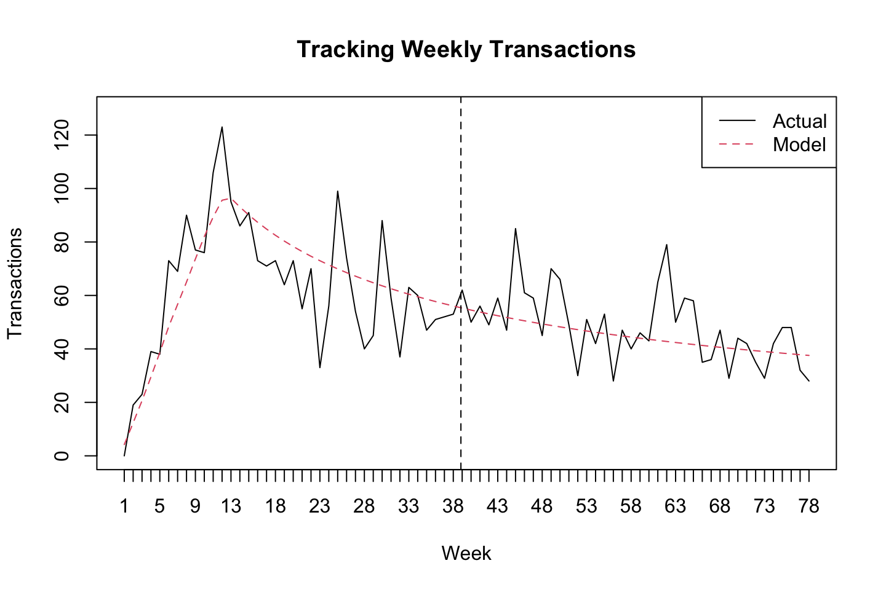
We see that the model generalizes pretty well the period. Instead of looking at the plot we can also show the underlying numbers.
inc.tracking[,20:25]## [,1] [,2] [,3] [,4] [,5] [,6]
## actual 73.00000 55.0000 70.00000 33.00000 56.00000 99.00000
## expected 78.30848 76.4191 74.64776 72.98278 71.41403 69.93268We can also show a cummulated sum over the weeks, notice that the hold period and the training period is separated by the dashed line.
cum.tracking.data <- cumsum(w.track.data)
cum.tracking <- pnbd.PlotTrackingCum(params
,T.cal
,T.tot
,cum.tracking.data
,n.periods.final)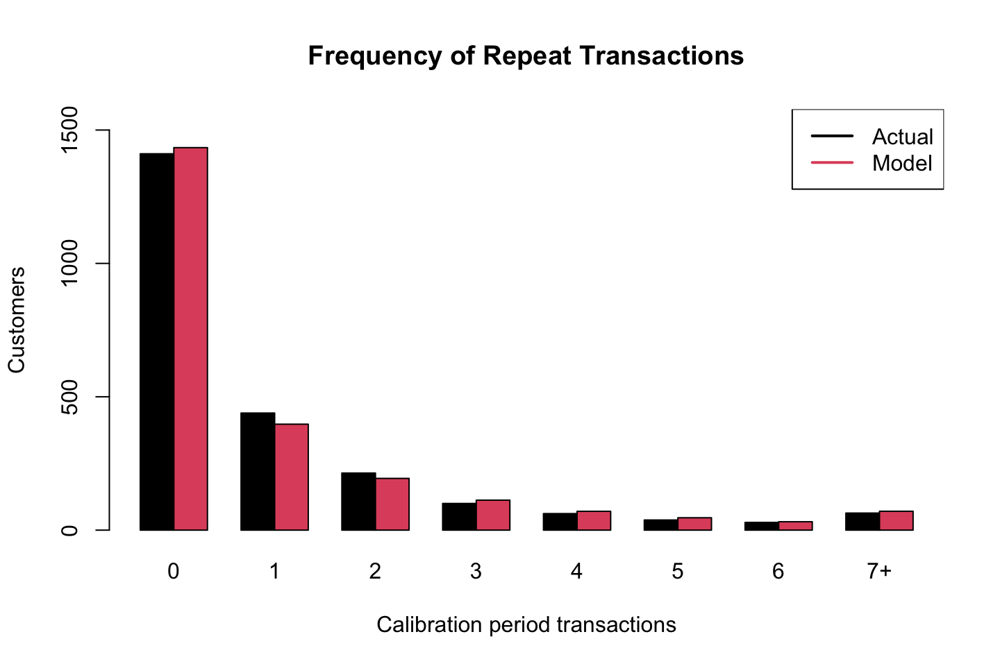
cum.tracking[,20:25]## [,1] [,2] [,3] [,4] [,5] [,6]
## actual 1359.000 1414.000 1484.000 1517.000 1573.00 1672.000
## expected 1308.856 1385.275 1459.923 1532.906 1604.32 1674.2531.2.2 BG/NBD
Used in a non-contractual situation in which customers can make a purchase at any time. The model describes the rate at which customers make purchases and the rate at which they drop out. This is done with four parameters and also allowing for heterogeneity.
The following is the BG/NBD model on the CDNow data.
Note: calibration = training
1.2.2.1 Data Preparation
We only need three pieces of information for every person:
- How many transactions the customer in the training period - Frequency
- Denoted as \(x\)
- The time of their last transaction - Recency
- Denoted as \(t.x\)
- The total time for which they were observed
- Denoted as \(T.cal\). For time of the calibration period.
Thus we must construct a data frame with a row for each customer and the information above.
We use dc.ReadLines, this is basically the same as read.csv. Notice that elog is a file with a lot of transactions. Thus we have customer identifier, date and amount.
cdnowElog <- system.file("data/cdnowElog.csv", package = "BTYD")
elog <- dc.ReadLines(cdnowElog, cust.idx = 2
,date.idx = 3, sales.idx = 5)
elog[1:3,]| cust | date | sales |
|---|---|---|
| 1 | 19970101 | 29.33 |
| 1 | 19970118 | 29.73 |
| 1 | 19970802 | 14.96 |
Notice the name ‘elog’, that is for event log. Hence it logs all of the events.
We want to transform the date to a date type instead.
elog$date <- as.Date(elog$date, "%Y%m%d");
elog[1:3,]| cust | date | sales |
|---|---|---|
| 1 | 1997-01-01 | 29.33 |
| 1 | 1997-01-18 | 29.73 |
| 1 | 1997-08-02 | 14.96 |
The following is able to merge transactions in the same customer. Before running the code we have 6919 observations (events).
elog <- dc.MergeTransactionsOnSameDate(elog);After merging we have 6696 events. Thus it appears that some customers made several purchases on the same day.
Now we can split the data to get a train (calibration) and test period.
end.of.cal.period <- as.Date("1997-09-30") #Insert the last date in the train period.
elog.cal <- elog[which(elog$date <= end.of.cal.period), ]Notice, the BG/NBD model deals with repeat transactions, hence the first transaction is ignored.
split.data <- dc.SplitUpElogForRepeatTrans(elog.cal);
clean.elog <- split.data$repeat.trans.elog;Now we are going to create a customer-by-time matrix. That is simply a matrix with each customer on each row and then days as columns. The following is just a snip.
#Customer-by-time: Repeatitive transactions
freq.cbt <- dc.CreateFreqCBT(clean.elog);
freq.cbt[1:3,1:5]## date
## cust 1997-01-08 1997-01-09 1997-01-10 1997-01-11 1997-01-12
## 1 0 0 0 0 0
## 2 0 0 0 0 0
## 6 0 0 0 1 0Since we initially deleted all first transactions, the frequence customer-by-time matrix does not have any of the customer who made zero repeat transactions. These customers are still important hence they will be included in the matrix with the following.
#Customer-by-time: All first transactions transactions
tot.cbt <- dc.CreateFreqCBT(elog)
#Merging both customer-by-time matrices.
cal.cbt <- dc.MergeCustomers(tot.cbt, freq.cbt)birth.periods <- split.data$cust.data$birth.per
last.dates <- split.data$cust.data$last.date
cal.cbs.dates <- data.frame(birth.periods, last.dates
,end.of.cal.period)
cal.cbs <- dc.BuildCBSFromCBTAndDates(cal.cbt
,cal.cbs.dates
,per="week") # we want to see weekly dataNotes:
1. cbs = customer-by-sufficient-statistics
2. We use per = "week" to get data shown per week, as ultimately it show the same as pr. day and returns a more simple data frame.
In general the procedure above can be executed in the following command: dc.ElogToCbsCbt(). But they have chosen to show the process, so one is able to make iterations to the data if that is needed in other applications.
1.2.2.2 Parameter Estimation
We use the following formula to estiamte the parameters. They take starting point in par.start = c(1, 3, 1, 3), and iterate from there.
params <- bgnbd.EstimateParameters(cal.cbs);
params## p1 p2 p3 p4
## 0.2425982 4.4136842 0.7929899 2.4261667#Log-Likelyhood of parameters
LL <- bgnbd.cbs.LL(params, cal.cbs);
LL## [1] -9582.429p.matrix <- c(params, LL);
for (i in 1:2){
params <- bgnbd.EstimateParameters(cal.cbs, params);
LL <- bgnbd.cbs.LL(params, cal.cbs);
p.matrix.row <- c(params, LL);
p.matrix <- rbind(p.matrix, p.matrix.row);
}
colnames(p.matrix) <- c("r", "alpha", "a", "b", "LL");
rownames(p.matrix) <- 1:3;
p.matrix## r alpha a b LL
## 1 0.2425982 4.413684 0.7929899 2.426167 -9582.429
## 2 0.2425965 4.413685 0.7929888 2.426166 -9582.429
## 3 0.2425967 4.413659 0.7929869 2.426164 -9582.429We have the following parameters:
- r = referring to the transaction - describes the gamma mixing distribution of the NBD transaction process. See figure 1.3
- alpha = refers to the transaction - describes the gamma mixing distribution of the NBD transaction process. See figure 1.3
- a = alpha that manipulates the beta distribution - explains dropout rate. See figure 1.4
- b = beta, that manipulates the beta distribution - explains dropout rate. See figure 1.4
They mention that it is good to try different starting points, i guess that could merely be incorporated into the loop.
bgnbd.PlotTransactionRateHeterogeneity(params)Figure 1.3: Transaction rate heterogeneity of estimated parameters
bgnbd.PlotDropoutRateHeterogeneity(params)Figure 1.4: Dropout probability heterogeneity of estimated parameters
1.2.2.3 Individual Level Estimation
This is about predicting on individual customer level. First we can estimate the number of transactions we expect a newly acquired customer to make in a give time period.
bgnbd.Expectation(params
,t=52) # = 1 year, has we have 52 weeks## p3
## 1.444004We see that he is expected to make 1.44 purchases.
The follwing show customer 1516.
cal.cbs["1516",]## x t.x T.cal
## 26.00000 30.85714 31.00000We see that he made 26 repeat transactions in the calibration period. Period 30.8 was the most recent period of a purchase, indicating that he bought towards the end of period 30.
Now we can save the attributes in objects.
x <- cal.cbs["1516", "x"]
t.x <- cal.cbs["1516", "t.x"]
T.cal <- cal.cbs["1516", "T.cal"]Finally we can calculate the expected number of purchases in the holdout period.
bgnbd.ConditionalExpectedTransactions(params
,T.star = 52 #Prediction period, hence 52 weeks.
,x = x #No. of repeat trans. in cal. period.
,t.x = t.x #Most recent period with purchase
,T.cal = T.cal) #Length of cal. period.## p3
## 25.75659We see that the customer is expected to make 25.76 purchases in the hold-out-period.
bgnbd.PAlive(params = params
,x = x #No. of repeat transactions in the cal period
,t.x = t.x #Time of most recent repeat transaction
,T.cal = T.cal) #Length of calibration period## p3
## 0.9688523We see that there is a probability of 96.8% that he will be alive after the end of the calibration period. That also seems intuitively high, as customer with the most recent transaction was in 38.4, hence this customer must also be close to the end of the calibration period.
for (i in seq(10, 25, 5)){
cond.expectation <- bgnbd.ConditionalExpectedTransactions(
params, T.star = 52, x = i,
t.x = 20, T.cal = 39)
cat ("x:",i,"\t Expectation:",cond.expectation, fill = TRUE)
}## x: 10 Expectation: 0.3474606
## x: 15 Expectation: 0.04283391
## x: 20 Expectation: 0.004158973
## x: 25 Expectation: 0.0003583685I am not entirely sure what is meant by the ‘increasing frequency paradox’ as of the conditional expectation
1.2.2.4 Plotting / Goodness-of-fit
First of all we can plot the actual vs. predicted in the calibration period.
bgnbd.PlotFrequencyInCalibration(params = params
,cal.cbs = cal.cbs
,censor = 7 #All 7+ are binned.
)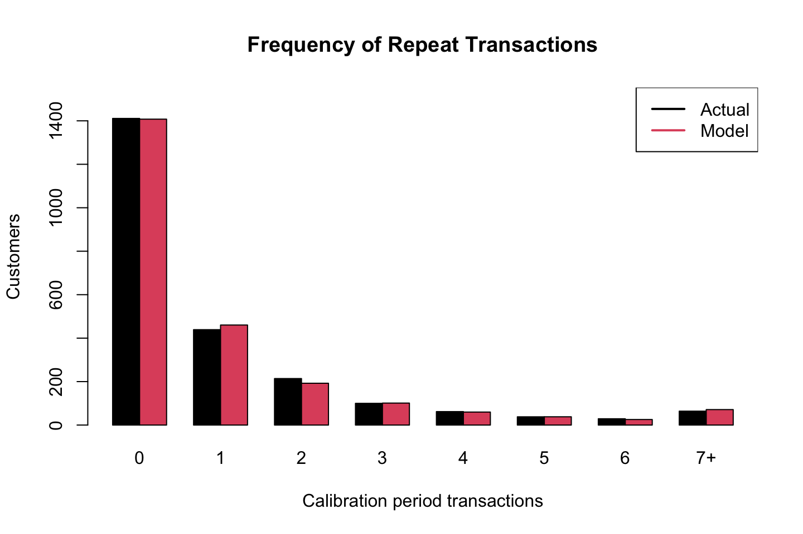
## freq.0 freq.1 freq.2 freq.3 freq.4 freq.5 freq.6
## n.x.actual 1411.000 439.0000 214.0000 100.0000 62.00000 38.00000 29.00000
## n.x.expected 1407.682 460.3225 192.4637 101.1657 59.84786 38.12006 25.54923
## freq.7+
## n.x.actual 64.00000
## n.x.expected 71.22628We see that the model replicates the variance that we observe in the data very well.
What we see is amount of customers on y and amount of transactinos in training period.
Now we construct the hold/out period.
elog <- dc.SplitUpElogForRepeatTrans(elog)$repeat.trans.elog;
x.star <- rep(0, nrow(cal.cbs));
cal.cbs <- cbind(cal.cbs, x.star);
elog.custs <- elog$cust;
for (i in 1:nrow(cal.cbs)){
current.cust <- rownames(cal.cbs)[i]
tot.cust.trans <- length(which(elog.custs == current.cust))
cal.trans <- cal.cbs[i, "x"]
cal.cbs[i, "x.star"] <- tot.cust.trans - cal.trans
}
cal.cbs[1:3,]## x t.x T.cal x.star
## 1 2 30.428571 38.85714 1
## 2 1 1.714286 38.85714 0
## 3 0 0.000000 38.85714 0We fill in the characteristics to the model. And we can plot
T.star <- 39 # length of the holdout period
censor <- 7 # This censor serves the same purpose described above
x.star <- cal.cbs[,"x.star"]
comp <- bgnbd.PlotFreqVsConditionalExpectedFrequency(params
,T.star
,cal.cbs
,x.star
,censor)Figure 1.5: Actual vs. conditional expected transactions in the holdout period.
rownames(comp) <- c("act", "exp", "bin")
comp## freq.0 freq.1 freq.2 freq.3 freq.4 freq.5
## act 0.2367116 0.6970387 1.392523 1.560000 2.532258 2.947368
## exp 0.2250893 0.5231364 1.044126 1.520256 2.163824 2.653789
## bin 1411.0000000 439.0000000 214.000000 100.000000 62.000000 38.000000
## freq.6 freq.7+
## act 3.862069 6.359375
## exp 3.503957 6.157036
## bin 29.000000 64.000000Now we can assess how well the our model predict how many transactions will occur in each week.
First, we need to convert the total transactions pr. day into a customer-by-time matrix (cbt). And then we can transform them into weekly observations instead of daily.
tot.cbt <- dc.CreateFreqCBT(elog)d.track.data <- rep(0,7 * 78) #Corresponding to the amount of daily transactions in the holdout
origin <- as.Date("1997-01-01")
for (i in colnames(tot.cbt)){
date.index <- difftime(as.Date(i), origin) + 1;
d.track.data[date.index] <- sum(tot.cbt[,i]);
}
w.track.data <- rep(0, 78)
for (j in 1:78){
w.track.data[j] <- sum(d.track.data[(j*7-6):(j*7)])
}Now we can plot and compare the number of transactions with the predicted (expected).
T.cal <- cal.cbs[,"T.cal"]
T.tot <- 78 #78 because we have 78 weeks in total, if daily then 7*78=546
n.periods.final <- 78 #Notice, often this will just be the same, but does not have to be
inc.tracking <- bgnbd.PlotTrackingInc(params, T.cal
,T.tot, w.track.data
,n.periods.final)
Figure 1.6: Actual vs. expected incremental purchasing behaviour.
inc.tracking[,20:25]## [,1] [,2] [,3] [,4] [,5] [,6]
## actual 73.00000 55.00000 70.00000 33.00000 56.00000 99.00000
## expected 76.86531 74.88843 73.04554 71.32166 69.70412 68.18213We can now plot the following with the actual vs. the expected (predicted).
cum.tracking.data <- cumsum(w.track.data)
cum.tracking <- bgnbd.PlotTrackingCum(params, T.cal
,T.tot, cum.tracking.data
,n.periods.final)
Figure 1.7: Actual vs. expected cumulative purchasing behaviour.
cum.tracking[,20:25]## [,1] [,2] [,3] [,4] [,5] [,6]
## actual 1359.000 1414.000 1484.000 1517.000 1573.000 1672.0
## expected 1312.458 1387.346 1460.392 1531.713 1601.418 1669.6Notice that the dashed line show the shift from calibration to hold out sample.
We see that our model fits the data very well! And also captures the trend.
1.2.3 BG/BB
I am not sure if this is a part of the curriculum
1.2.3.1 Data Preparation
simElog <- system.file("data/discreteSimElog.csv"
,package = "BTYD")
elog <- dc.ReadLines(simElog, cust.idx = 1, date.idx = 2)
elog[1:3,]| cust | date |
|---|---|
| 1 | 1970-01-01 |
| 1 | 1975-01-01 |
| 1 | 1977-01-01 |
elog$date <- as.Date(elog$date, "%Y-%m-%d")
max(elog$date);## [1] "1983-01-01"min(elog$date);## [1] "1970-01-01"# let's make the calibration period end somewhere in-between
T.cal <- as.Date("1977-01-01")
simData <- dc.ElogToCbsCbt(elog, per="year", T.cal)
cal.cbs <- simData$cal$cbs
freq<- cal.cbs[,"x"]
rec <- cal.cbs[,"t.x"]
trans.opp <- 7 # transaction opportunities
cal.rf.matrix <- dc.MakeRFmatrixCal(freq, rec, trans.opp)
cal.rf.matrix[1:5,]## x t.x n.cal custs
## [1,] 0 0 7 2900
## [2,] 1 1 7 933
## [3,] 1 2 7 218
## [4,] 2 2 7 489
## [5,] 1 3 7 951.2.3.2 Parameter Estimation
data(donationsSummary);
rf.matrix <- donationsSummary$rf.matrix
params <- bgbb.EstimateParameters(rf.matrix);
LL <- bgbb.rf.matrix.LL(params, rf.matrix);
p.matrix <- c(params, LL);
for (i in 1:2){
params <- bgbb.EstimateParameters(rf.matrix, params);
LL <- bgbb.rf.matrix.LL(params, rf.matrix);
p.matrix.row <- c(params, LL);
p.matrix <- rbind(p.matrix, p.matrix.row);
}
colnames(p.matrix) <- c("alpha", "beta", "gamma", "delta", "LL");
rownames(p.matrix) <- 1:3;
p.matrix;## alpha beta gamma delta LL
## 1 1.203507 0.7497667 0.6567568 2.783887 -33225.58
## 2 1.203533 0.7497272 0.6567788 2.783812 -33225.58
## 3 1.203528 0.7497260 0.6567808 2.783796 -33225.581.2.3.3 Individual Level Estimations
bgbb.Expectation(params, n=10);## [1] 3.179805# customer A
n.cal = 6
n.star = 10
x = 0
t.x = 0
bgbb.ConditionalExpectedTransactions(params, n.cal
,n.star, x, t.x)## [1] 0.1302169# customer B
x = 4
t.x = 5
bgbb.ConditionalExpectedTransactions(params, n.cal
,n.star, x, t.x)## [1] 3.6278581.2.3.4 Plotting / Goodness-of-fit
bgbb.PlotFrequencyInCalibration(params, rf.matrix)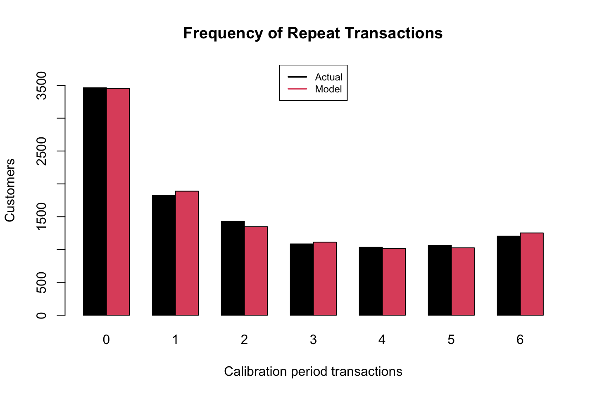
## 0 1 2 3 4 5
## actual.frequency 3464.000 1823.000 1430.000 1085.000 1036.000 1063.000
## expected.frequency 3454.848 1888.678 1348.904 1113.392 1017.928 1027.162
## 6
## actual.frequency 1203.000
## expected.frequency 1253.088holdout.cbs <- simData$holdout$cbs
x.star <- holdout.cbs[,"x.star"]n.star <- 5 # length of the holdout period
x.star <- donationsSummary$x.star
comp <- bgbb.PlotFreqVsConditionalExpectedFrequency(params, n.star,
rf.matrix, x.star)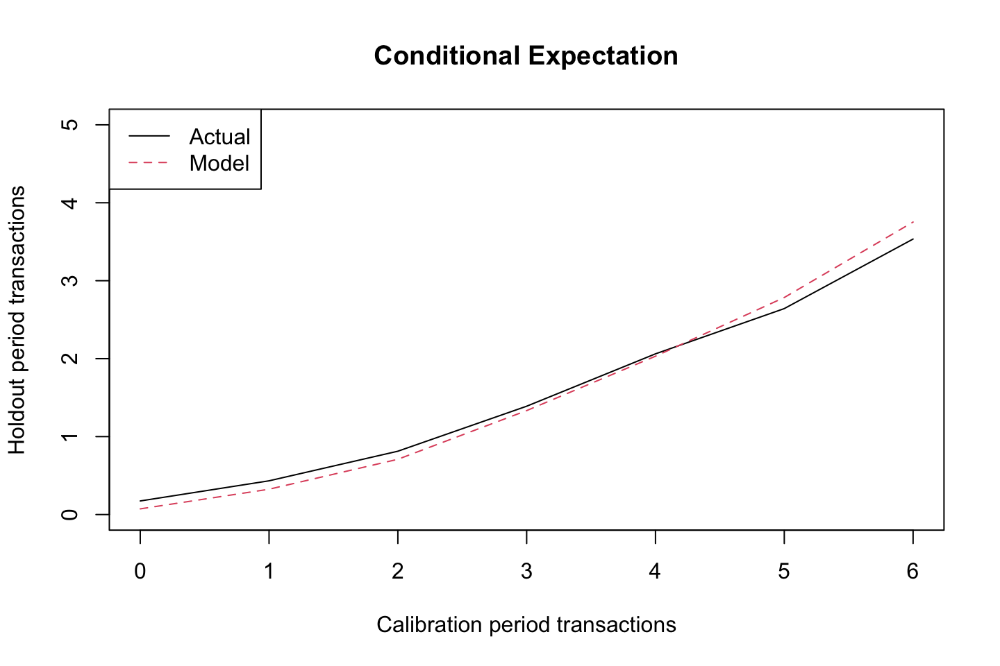
rownames(comp) <- c("act", "exp", "bin")
comp## freq.0 freq.1 freq.2 freq.3 freq.4 freq.5
## act 1.743649e-01 0.4328031 0.8125874 1.389862 2.061776 2.642521
## exp 7.286318e-02 0.3248841 0.7089417 1.333666 2.031203 2.784482
## bin 3.464000e+03 1823.0000000 1430.0000000 1085.000000 1036.000000 1063.000000
## freq.6
## act 3.534497
## exp 3.752500
## bin 1203.000000comp <- bgbb.PlotRecVsConditionalExpectedFrequency(params, n.star,
rf.matrix, x.star)
rownames(comp) <- c("act", "exp", "bin")
comp## rec.0 rec.1 rec.2 rec.3 rec.4 rec.5
## act 1.743649e-01 0.2181485 0.3898876 0.4872521 0.8088685 1.652289
## exp 7.286318e-02 0.0856939 0.1798423 0.4041111 0.8510811 1.726323
## bin 3.464000e+03 1091.0000000 890.0000000 706.0000000 654.0000000 1136.000000
## rec.6
## act 2.946886
## exp 3.027190
## bin 3163.000000inc.track.data <- donationsSummary$annual.trans
n.cal <- 6
xtickmarks <- 1996:2006
inc.tracking <- bgbb.PlotTrackingInc(params, rf.matrix
,inc.track.data
,xticklab = xtickmarks)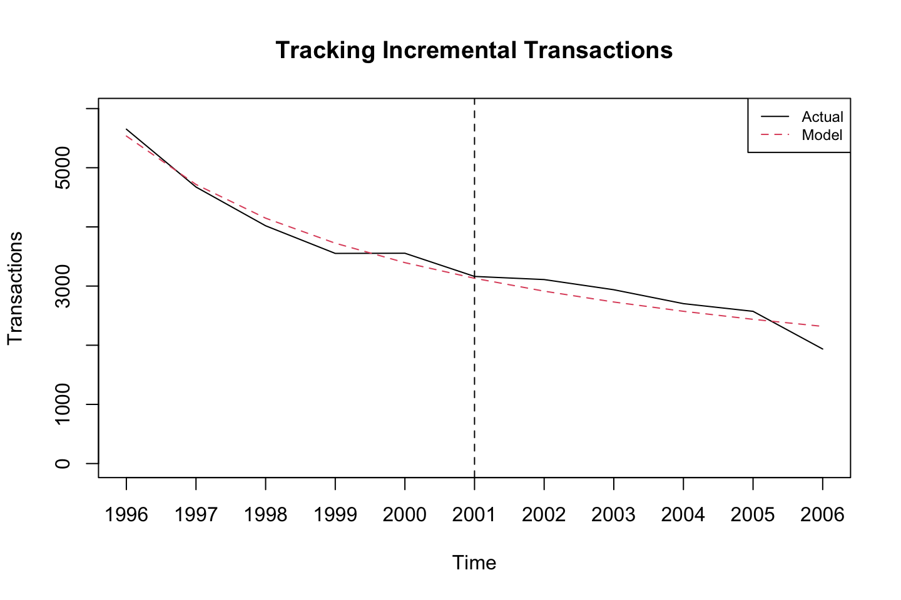
rownames(inc.tracking) <- c("act", "exp")
inc.tracking## [,1] [,2] [,3] [,4] [,5] [,6] [,7] [,8]
## act 5652.000 4674.000 4019.000 3552.000 3555.000 3163.000 3110.000 2938.000
## exp 5535.833 4717.059 4147.621 3724.665 3395.888 3131.647 2913.778 2730.482
## [,9] [,10] [,11]
## act 2703.000 2573.000 1936.000
## exp 2573.731 2437.854 2318.727cum.track.data <- cumsum(inc.track.data)
cum.tracking <- bgbb.PlotTrackingCum(params, rf.matrix, cum.track.data
,xticklab = xtickmarks)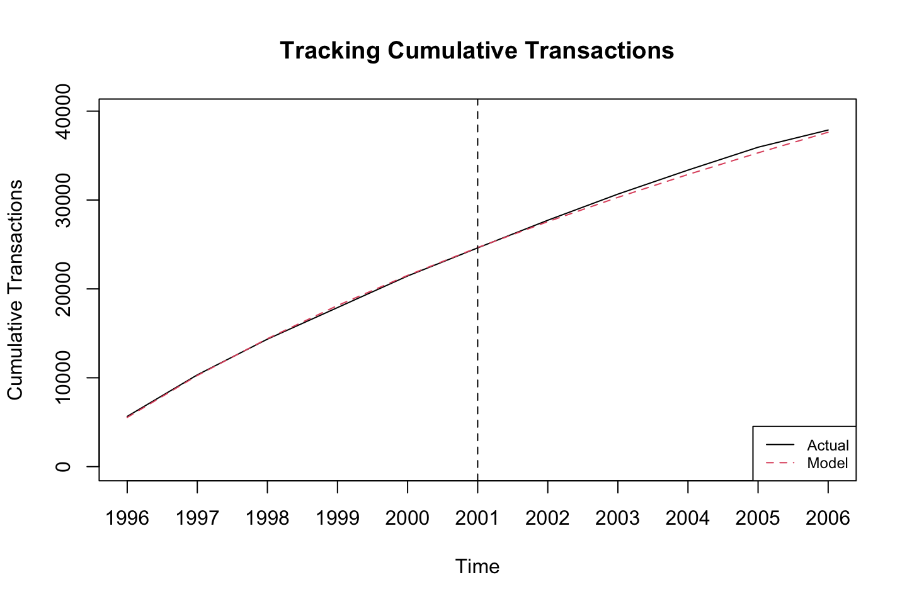
rownames(cum.tracking) <- c("act", "exp")
cum.tracking## [,1] [,2] [,3] [,4] [,5] [,6] [,7] [,8]
## act 5652.000 10326.00 14345.00 17897.00 21452.00 24615.00 27725.00 30663.00
## exp 5535.833 10252.89 14400.51 18125.18 21521.07 24652.71 27566.49 30296.97
## [,9] [,10] [,11]
## act 33366.0 35939.00 37875.00
## exp 32870.7 35308.56 37627.291.2.4 Examples from the lecture
1.2.4.1 Pareto/NBD
PREDICTING LONG TERM CUSTOMER VALUE WITH BTYD PACKAGE
- Pareto/NBD (negative binomial distribution) modeling of
- repeat-buying behavior in a noncontractual setting
Based on Schmittlein, Morrison, and Colombo (1987), “Counting Your Customers: Who Are They and What Will They Do Next?” Management Science, 33, 1-24.
Required data for model is:
“customer-by-sufficient-statistic” (cbs) matrix with the ‘sufficient’ stats being: This is the most important table, this is the information that is needed to run the model.
- frequency of transaction (no of repeat transactions)
- recency (time of last transaction) and
- total time observed
Main model params are:
- beta unobserved shape parameter for Pareto dropout process
- s unobserved scale parameter for Pareto dropout process
- r unobserved shape parameter for NBD transaction
- alpha unobserved scale parameter for NBD transaction
Data are divided into earlier calibration and later holdout segments, using a single date as the cut point. “cal” data are used to predict “holdout” data
library(BTYD)
# Read in data
cdnowElog <- system.file("data/cdnowElog.csv", package = "BTYD")
# The raw data file
raw <- read.csv(cdnowElog)
head(raw)| masterid | sampleid | date | cds | sales |
|---|---|---|---|---|
| 4 | 1 | 19970101 | 2 | 29.33 |
| 4 | 1 | 19970118 | 2 | 29.73 |
| 4 | 1 | 19970802 | 1 | 14.96 |
| 4 | 1 | 19971212 | 2 | 26.48 |
| 21 | 2 | 19970101 | 3 | 63.34 |
| 21 | 2 | 19970113 | 1 | 11.77 |
We see the id of the customer and the date of transactions, and also amount of cd’s purchases and with the amount of sale.s
# Create event log from file "cdnowElog.csv", which has
# customer IDs in the second column, dates in the third column, and
# sales numbers in the fifth column.
elog <- dc.ReadLines(system.file("data/cdnowElog.csv", package="BTYD"),2,3,5)
elog[,"date"] <- as.Date(elog[,"date"], "%Y%m%d")
head(elog) #take a look on the raw data| cust | date | sales |
|---|---|---|
| 1 | 1997-01-01 | 29.33 |
| 1 | 1997-01-18 | 29.73 |
| 1 | 1997-08-02 | 14.96 |
| 1 | 1997-12-12 | 26.48 |
| 2 | 1997-01-01 | 63.34 |
| 2 | 1997-01-13 | 11.77 |
This is a new dataset where we have changed the names and formated the date.
Notice, that this should be the format of all tables if you want to run the model
data <- dc.ElogToCbsCbt(elog, per="week", T.cal=as.Date("1997-09-30"))
attributes(data)## $names
## [1] "cal" "holdout" "cust.data"We see that we have different attributes on the data. Notice that it is stored as a list.
attributes(data$cal)## $names
## [1] "cbs" "cbt"We see that the calibration data has both tables cbs and cbt.
head(data$cal$cbs) #take a look on the calibration data## x t.x T.cal
## 1 2 30.428571 38.85714
## 2 1 1.714286 38.85714
## 3 0 0.000000 38.85714
## 4 0 0.000000 38.85714
## 5 0 0.000000 38.85714
## 6 7 29.428571 38.85714We get the information:
- x = number of transactions. We see that there are only two transactions now, before we had 4, that is because one is in the hold out sample and we removed the first transaction.
1.2.4.1.1 Estimate parameters for Pareto/NBD model based upon calibration data
# initial estimate
(params2 <- pnbd.EstimateParameters(data$cal$cbs))## [1] 0.5533971 10.5801985 0.6060625 11.6562237We see the four params in the following order, r, alpha, s, beta
# look at log likelihood
(LL <- pnbd.cbs.LL(params2, data$cal$cbs))## [1] -9594.976# make a series of estimates, see if they converge to the same solution
p.matrix <- c(params2, LL)
for (i in 1:20) {
params2 <- pnbd.EstimateParameters(data$cal$cbs, params2)
LL <- pnbd.cbs.LL(params2, data$cal$cbs)
p.matrix.row <- c(params2, LL)
p.matrix <- rbind(p.matrix, p.matrix.row)
}
#colnames(p.matrix) <- c("beta","s","r","Alpha","LL")
# examine
p.matrix## [,1] [,2] [,3] [,4] [,5]
## p.matrix 0.5533971 10.58020 0.6060625 11.65622 -9594.976
## p.matrix.row 0.5534354 10.57952 0.6060276 11.65666 -9594.976
## p.matrix.row 0.5533710 10.57952 0.6059074 11.65812 -9594.976
## p.matrix.row 0.5533553 10.57867 0.6059434 11.65781 -9594.976
## p.matrix.row 0.5533415 10.57861 0.6059408 11.65791 -9594.976
## p.matrix.row 0.5533439 10.57851 0.6059382 11.65797 -9594.976
## p.matrix.row 0.5533318 10.57843 0.6059379 11.65807 -9594.976
## p.matrix.row 0.5533340 10.57836 0.6059363 11.65811 -9594.976
## p.matrix.row 0.5533217 10.57825 0.6059374 11.65826 -9594.976
## p.matrix.row 0.5533239 10.57819 0.6059363 11.65830 -9594.976
## p.matrix.row 0.5533034 10.57791 0.6059435 11.65883 -9594.976
## p.matrix.row 0.5533058 10.57788 0.6059432 11.65886 -9594.976
## p.matrix.row 0.5533276 10.57829 0.6059982 11.66026 -9594.976
## p.matrix.row 0.5533231 10.57829 0.6059994 11.66027 -9594.976
## p.matrix.row 0.5533233 10.57822 0.6059985 11.66032 -9594.976
## p.matrix.row 0.5533194 10.57822 0.6059995 11.66034 -9594.976
## p.matrix.row 0.5533199 10.57816 0.6059987 11.66037 -9594.976
## p.matrix.row 0.5533164 10.57816 0.6059997 11.66040 -9594.976
## p.matrix.row 0.5533170 10.57812 0.6059991 11.66043 -9594.976
## p.matrix.row 0.5533139 10.57811 0.6060002 11.66046 -9594.976
## p.matrix.row 0.5533146 10.57808 0.6059997 11.66049 -9594.976We see that the parameters are very stable, hence they dont change much in the iterations.
We see the average dropout rate: s/beta
#The average dropout rate
0.6060/11.65 # = 0.05201717. i.e.## [1] 0.05201717 r = p.matrix[1,3]
Alpha = p.matrix[1,4]
r/Alpha## p.matrix
## 0.05199476We see the average transaction rate:
#THe average transaction rate
0.5533/10.58 #=0.05229679 i.e.## [1] 0.05229679 beta = p.matrix[1,1]
s = p.matrix[1,2]
beta/s## p.matrix
## 0.05230499Notice, it is a miracle that it so similar to the dropout rate.
# use final set of values
(params2 <- p.matrix[dim(p.matrix)[1],1:4])## [1] 0.5533146 10.5780771 0.6059997 11.6604916#The drop-out rate - Pareto part
pnbd.PlotDropoutRateHeterogeneity(params2)
## [,1] [,2] [,3] [,4] [,5]
## x.axis.ticks 0 0.003138666 0.006277332 0.009415997 0.01255466
## heterogeneity Inf 28.044909886 20.575655163 16.907492071 14.55321079
## [,6] [,7] [,8] [,9] [,10]
## x.axis.ticks 0.01569333 0.01883199 0.02197066 0.02510933 0.02824799
## heterogeneity 12.84936813 11.52895283 10.45967842 9.56698323 8.80494055
## [,11] [,12] [,13] [,14] [,15] [,16]
## x.axis.ticks 0.03138666 0.03452532 0.03766399 0.04080265 0.04394132 0.04707999
## heterogeneity 8.14335724 7.56136637 7.04396357 6.58000684 6.16099837 5.78030958
## [,17] [,18] [,19] [,20] [,21] [,22]
## x.axis.ticks 0.05021865 0.05335732 0.05649598 0.05963465 0.06277332 0.06591198
## heterogeneity 5.43266965 5.11381734 4.82025747 4.54908656 4.29786548 4.06452456
## [,23] [,24] [,25] [,26] [,27] [,28]
## x.axis.ticks 0.06905065 0.07218931 0.07532798 0.07846664 0.08160531 0.08474398
## heterogeneity 3.84729188 3.64463819 3.45523411 3.27791632 3.11166077 2.95556109
## [,29] [,30] [,31] [,32] [,33] [,34]
## x.axis.ticks 0.08788264 0.09102131 0.09415997 0.09729864 0.1004373 0.103576
## heterogeneity 2.80881100 2.67069006 2.54055175 2.41781369 2.3019494 2.192481
## [,35] [,36] [,37] [,38] [,39] [,40]
## x.axis.ticks 0.1067146 0.1098533 0.112992 0.1161306 0.1192693 0.122408
## heterogeneity 2.0889748 1.9910337 1.898295 1.8104268 1.7271229 1.648102
## [,41] [,42] [,43] [,44] [,45] [,46]
## x.axis.ticks 0.1255466 0.1286853 0.131824 0.1349626 0.1381013 0.141240
## heterogeneity 1.5731038 1.5018885 1.434233 1.3699320 1.3087923 1.250636
## [,47] [,48] [,49] [,50] [,51] [,52]
## x.axis.ticks 0.1443786 0.1475173 0.150656 0.1537946 0.1569333 0.1600720
## heterogeneity 1.1952962 1.1426181 1.092456 1.0446756 0.9991485 0.9557561
## [,53] [,54] [,55] [,56] [,57] [,58]
## x.axis.ticks 0.1632106 0.1663493 0.169488 0.1726266 0.1757653 0.1789039
## heterogeneity 0.9143868 0.8749356 0.837304 0.8013992 0.7671341 0.7344262
## [,59] [,60] [,61] [,62] [,63] [,64]
## x.axis.ticks 0.1820426 0.1851813 0.1883199 0.1914586 0.1945973 0.1977359
## heterogeneity 0.7031982 0.6733769 0.6448933 0.6176821 0.5916817 0.5668339
## [,65] [,66] [,67] [,68] [,69] [,70]
## x.axis.ticks 0.2008746 0.2040133 0.2071519 0.2102906 0.2134293 0.2165679
## heterogeneity 0.5430835 0.5203783 0.4986689 0.4779083 0.4580523 0.4390587
## [,71] [,72] [,73] [,74] [,75] [,76]
## x.axis.ticks 0.2197066 0.2228453 0.2259839 0.2291226 0.2322613 0.2353999
## heterogeneity 0.4208875 0.4035008 0.3868625 0.3709386 0.3556964 0.3411050
## [,77] [,78] [,79] [,80] [,81] [,82]
## x.axis.ticks 0.2385386 0.2416773 0.2448159 0.2479546 0.2510933 0.2542319
## heterogeneity 0.3271352 0.3137588 0.3009494 0.2886817 0.2769315 0.2656760
## [,83] [,84] [,85] [,86] [,87] [,88]
## x.axis.ticks 0.2573706 0.2605093 0.2636479 0.2667866 0.2699253 0.2730639
## heterogeneity 0.2548932 0.2445624 0.2346637 0.2251782 0.2160880 0.2073757
## [,89] [,90] [,91] [,92] [,93] [,94]
## x.axis.ticks 0.2762026 0.2793413 0.2824799 0.2856186 0.2887572 0.2918959
## heterogeneity 0.1990251 0.1910205 0.1833469 0.1759901 0.1689366 0.1621733
## [,95] [,96] [,97] [,98] [,99] [,100]
## x.axis.ticks 0.2950346 0.2981732 0.3013119 0.3044506 0.3075892 0.3107279
## heterogeneity 0.1556879 0.1494685 0.1435038 0.1377830 0.1322958 0.1270324The average lifetime:
Hence we take one and divide it by the average dropout rate.
1/(0.6060/11.65) #i.e.## [1] 19.22442 r = p.matrix[1,3]
Alpha = p.matrix[1,4]
1/(r/Alpha)## p.matrix
## 19.23271We can then plot what characterizes the unobserved lifetime for a customer with an average dropoutrate
# Plot average tendency to drop-out
x <- seq(0, 40, length.out=1000)
dat <- data.frame(x=x, densx=dexp(x, rate=0.052)) #Notice, 0.052 is the average dropout rate
library(ggplot2)
ggplot(dat, aes(x=x, y=densx)) + geom_line()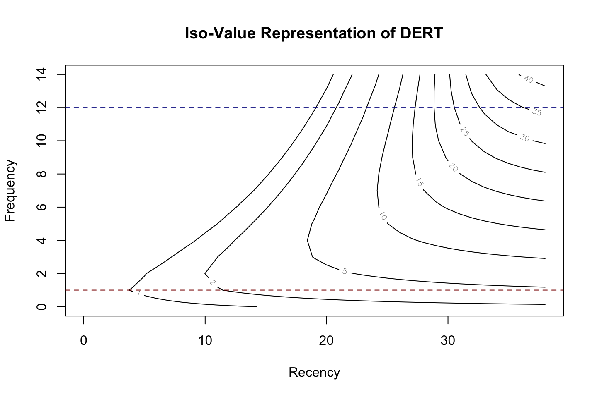
# The transaction rate - NBD part
pnbd.PlotTransactionRateHeterogeneity(params2)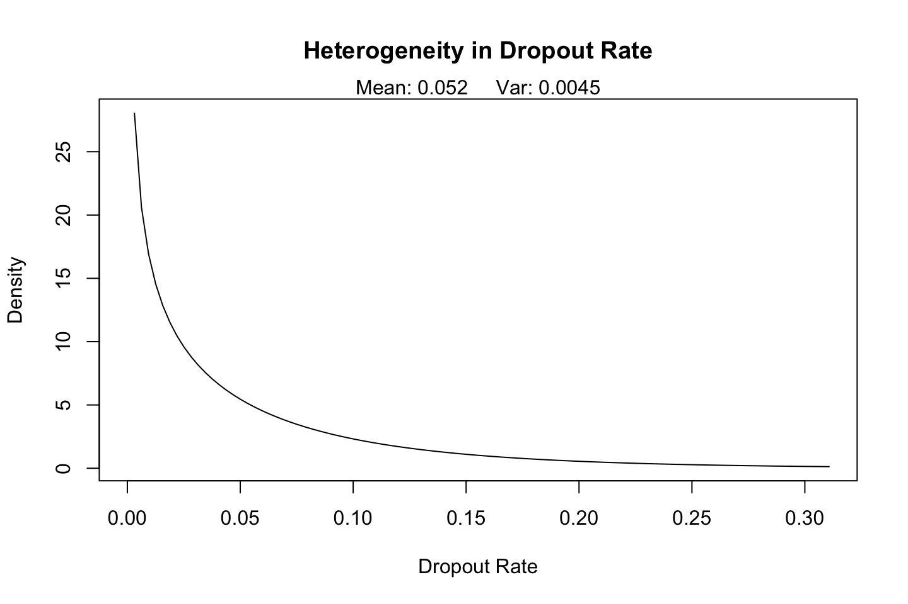
## [,1] [,2] [,3] [,4] [,5]
## x.axis.ticks 0 0.003317791 0.006635582 0.009953373 0.01327116
## heterogeneity Inf 28.378669973 20.104088608 16.195153025 13.75101668
## [,6] [,7] [,8] [,9] [,10]
## x.axis.ticks 0.01658895 0.01990675 0.02322454 0.02654233 0.02986012
## heterogeneity 12.01723584 10.69531406 9.63934342 8.76801657 8.03175296
## [,11] [,12] [,13] [,14] [,15] [,16]
## x.axis.ticks 0.03317791 0.0364957 0.03981349 0.04313128 0.04644907 0.04976686
## heterogeneity 7.39825343 6.8453831 6.35735156 5.92252045 5.53207687 5.17919351
## [,17] [,18] [,19] [,20] [,21] [,22]
## x.axis.ticks 0.05308465 0.05640245 0.05972024 0.06303803 0.06635582 0.06967361
## heterogeneity 4.85847735 4.56559617 4.29701856 4.04982850 3.82159058 3.61024998
## [,23] [,24] [,25] [,26] [,27] [,28]
## x.axis.ticks 0.0729914 0.07630919 0.07962698 0.08294477 0.08626256 0.08958035
## heterogeneity 3.4140571 3.23151010 3.06131004 2.90232606 2.75356748 2.61416160
## [,29] [,30] [,31] [,32] [,33] [,34]
## x.axis.ticks 0.09289815 0.09621594 0.09953373 0.1028515 0.1061693 0.1094871
## heterogeneity 2.48333568 2.36040227 2.24474714 2.1358192 2.0331225 1.9362085
## [,35] [,36] [,37] [,38] [,39] [,40]
## x.axis.ticks 0.1128049 0.1161227 0.1194405 0.1227583 0.1260761 0.1293938
## heterogeneity 1.8446710 1.7581406 1.6762806 1.5987832 1.5253664 1.4557714
## [,41] [,42] [,43] [,44] [,45] [,46]
## x.axis.ticks 0.1327116 0.1360294 0.1393472 0.142665 0.1459828 0.1493006
## heterogeneity 1.3897599 1.3271122 1.2676255 1.211112 1.1573975 1.1063207
## [,47] [,48] [,49] [,50] [,51] [,52]
## x.axis.ticks 0.1526184 0.1559362 0.1592540 0.1625718 0.1658895 0.1692073
## heterogeneity 1.0577313 1.0114894 0.9674649 0.9255359 0.8855889 0.8475175
## [,53] [,54] [,55] [,56] [,57] [,58]
## x.axis.ticks 0.1725251 0.1758429 0.1791607 0.1824785 0.1857963 0.1891141
## heterogeneity 0.8112221 0.7766093 0.7435917 0.7120869 0.6820176 0.6533111
## [,59] [,60] [,61] [,62] [,63] [,64]
## x.axis.ticks 0.1924319 0.1957497 0.1990675 0.2023852 0.2057030 0.2090208
## heterogeneity 0.6258990 0.5997167 0.5747033 0.5508016 0.5279574 0.5061194
## [,65] [,66] [,67] [,68] [,69] [,70]
## x.axis.ticks 0.2123386 0.2156564 0.2189742 0.2222920 0.2256098 0.2289276
## heterogeneity 0.4852393 0.4652714 0.4461723 0.4279011 0.4104190 0.3936892
## [,71] [,72] [,73] [,74] [,75] [,76]
## x.axis.ticks 0.2322454 0.2355632 0.2388809 0.2421987 0.2455165 0.2488343
## heterogeneity 0.3776767 0.3623486 0.3476734 0.3336212 0.3201639 0.3072744
## [,77] [,78] [,79] [,80] [,81] [,82]
## x.axis.ticks 0.2521521 0.2554699 0.2587877 0.2621055 0.2654233 0.2687411
## heterogeneity 0.2949273 0.2830983 0.2717641 0.2609029 0.2504937 0.2405165
## [,83] [,84] [,85] [,86] [,87] [,88]
## x.axis.ticks 0.2720589 0.2753766 0.2786944 0.2820122 0.2853300 0.2886478
## heterogeneity 0.2309525 0.2217835 0.2129924 0.2045626 0.1964787 0.1887256
## [,89] [,90] [,91] [,92] [,93] [,94]
## x.axis.ticks 0.2919656 0.2952834 0.2986012 0.301919 0.3052368 0.3085546
## heterogeneity 0.1812891 0.1741557 0.1673125 0.160747 0.1544474 0.1484026
## [,95] [,96] [,97] [,98] [,99] [,100]
## x.axis.ticks 0.3118723 0.3151901 0.3185079 0.3218257 0.3251435 0.3284613
## heterogeneity 0.1426017 0.1370345 0.1316912 0.1265623 0.1216390 0.1169126So what is the interpretation of 0.0523, which is the average transaction rate. It means that on average the customers have 0.05 transactions per period (week). So the customer buys a CD every 20 week
# Overall fit - Calibration data
# Aggregate plots
pnbd.PlotFrequencyInCalibration(params2, data$cal$cbs, 7)## freq.0 freq.1 freq.2 freq.3 freq.4 freq.5 freq.6
## n.x.actual 1411.000 439.0000 214.0000 100.0000 62.00000 38.00000 29.00000
## n.x.expected 1434.049 397.2334 194.0175 112.4031 70.59158 46.43743 31.47897
## freq.7+
## n.x.actual 64.00000
## n.x.expected 70.78907Using the holdout period
# Fit Holdout period
# Plot of performance in hold-out period
T.star <- 39 # length of the holdout period
censor <- 7 # This censor serves the same purpose as above
x.star <- data$holdout$cbs[,"x.star"]
comp <- pnbd.PlotFreqVsConditionalExpectedFrequency(params2, T.star,
data$cal$cbs, x.star, censor)rownames(comp) <- c("act", "exp", "bin")
comp## freq.0 freq.1 freq.2 freq.3 freq.4 freq.5
## act 0.2367116 0.6970387 1.392523 1.560000 2.532258 2.947368
## exp 0.1384572 0.5995278 1.195945 1.713991 2.398495 2.907417
## bin 1411.0000000 439.0000000 214.000000 100.000000 62.000000 38.000000
## freq.6 freq.7+
## act 3.862069 6.359375
## exp 3.818842 6.403450
## bin 29.000000 64.000000The plot compares what we have observed and what we expect from the model.
The following calculates the expected number of transactions in a given period.
# A randomly selected individual
pnbd.Expectation(params2,78)## [1] 1.909942We see that for any given customer we expect around 2 purchases for the period.
#Probability that a randomly selected customer makes 0 purchases in the hold-out period
pnbd.pmf.General(params2,T.star,t.end = 78,0)## [1] 0.8109832That is a probability of 81%
# Analysing a specific customer - No of transactions
data$cal$cbs["1516",]## x t.x T.cal
## 26.00000 30.85714 31.00000x <- data$cal$cbs["1516", "x"]
t.x <- data$cal$cbs["1516", "t.x"]
T.cal <- data$cal$cbs["1516", "T.cal"]# x
# t.x
# T.calWe see that the customer has made 26 purchases in the calibration period. He bought something in period 30.8 and we see the holdout period is 31 periods, hence we expect him to be alive in the end of the hold out period.
Now we want to calculate the number of transactions n period ahead given the information that we have about the customer.
# T.star no of periods ahead
df <- pnbd.ConditionalExpectedTransactions(params2,T.star=1:5,x,t.x,T.cal)
t(t(df))## [,1]
## [1,] 0.6328092
## [2,] 1.2568947
## [3,] 1.8725683
## [4,] 2.4801239
## [5,] 3.0798392Notice, that the table is accumulated, hence in period 1 we expect 0.63 transactions, then in period 1 and 2 we expect 1.25 transactions and lastly in period etc.
The following show how much it changes from period to period (week).
res <- data.frame(diff(as.matrix(df)))
print(res)## diff.as.matrix.df..
## 1 0.6240856
## 2 0.6156736
## 3 0.6075556
## 4 0.5997153# DERT discounted expected residual no. of transactions
# 15% compounded annually has been converted to 0.0027 compounded continuously,
# as we are dealing with weekly data and not annual data.
d <- 0.0027
pnbd.DERT(params2,x,t.x,T.cal,d)## [1] 86.04656We see that the DERT = 86, hence we see that the later we get the transactions, that amount is not as valuable today.
# calculate the discounted expected residual transactions of a customer
# who made 2 repeat transactions in a calibration period that was 38.86
# weeks long, with the last transaction occurring in the middle of
# the 31th week.
pnbd.DERT(params2, x=2, t.x=30.43, T.cal=38.86, d)## [1] 6.483942# We can also use vectors to compute DERT for several customers:
pnbd.DERT(params2, x=1:10, t.x = 30.43, T.cal=38.86, d)## [1] 3.994777 6.483942 8.895852 11.218449 13.438376 15.541043 17.510758
## [8] 19.330967 20.984605 22.454582We see that x iterates form 1 to 10, hence customers with 10 repeatative purchases in the calibration has a discounted expected residual no. of transactions that is increasing.
pnbd.Plot.DERT(params2, x=0:14, t.x=0:38, T.cal=38.86, d, type="contour")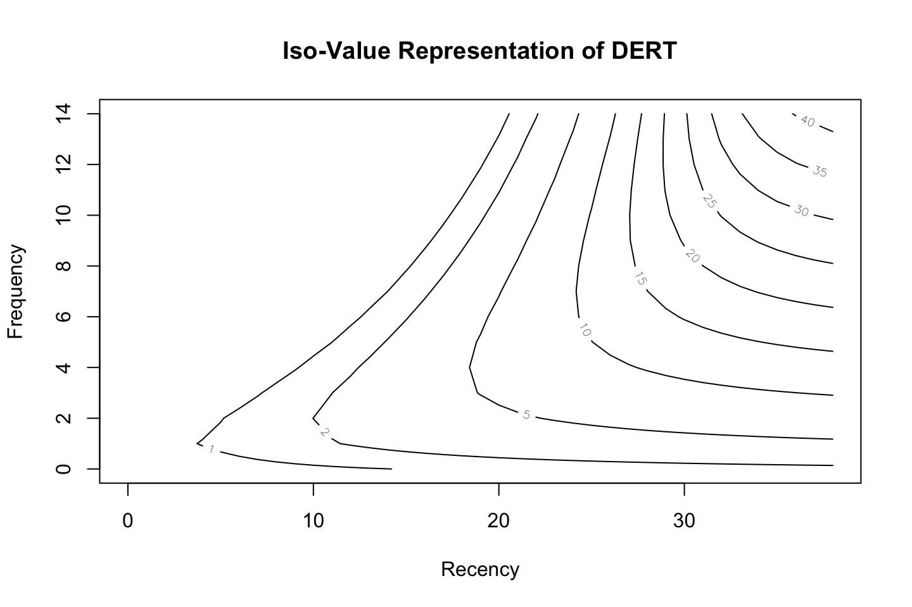
## 0 1 2 3 4 5
## 0 0.4770585 0.5779056 0.3199351 0.1294895 0.04460094 0.01397432
## 1 0.5184917 0.6832675 0.4167989 0.1856906 0.07018641 0.02409025
## 2 0.5592651 0.7947977 0.5300382 0.2581760 0.10636616 0.03971331
## 3 0.5993534 0.9116617 0.6600571 0.3494857 0.15607082 0.06301878
## 4 0.6387393 1.0330181 0.8069337 0.4621052 0.22264492 0.09675453
## 5 0.6774115 1.1580344 0.9704061 0.5983581 0.30980825 0.14431123
## 6 0.7153638 1.2859006 1.1498716 0.7602863 0.42158225 0.20977683
## 7 0.7525940 1.4158414 1.3444000 0.9495253 0.56217436 0.29796320
## 8 0.7891031 1.5471246 1.5527617 1.1671812 0.73581558 0.41438948
## 9 0.8248950 1.6790690 1.7734666 1.4137219 0.94655002 0.56520349
## 10 0.8599754 1.8110487 2.0048151 1.6888919 1.19798164 0.75702129
## 11 0.8943521 1.9424966 2.2449544 1.9916628 1.49299089 0.99666644
## 12 0.9280339 2.0729051 2.4919389 2.3202264 1.83344279 1.29079726
## 13 0.9610312 2.2018261 2.7437904 2.6720355 2.21991653 1.64542303
## 14 0.9933550 2.3288698 2.9985543 3.0438914 2.65149127 2.06533082
## 15 1.0250169 2.4537020 3.2543503 3.4320723 3.12562336 2.55346991
## 16 1.0560292 2.5760412 3.5094141 3.8324921 3.63814310 3.11036768
## 17 1.0864046 2.6956549 3.7621307 4.2408754 4.18338533 3.73367015
## 18 1.1161560 2.8123560 4.0110568 4.6529342 4.75444977 4.41790410
## 19 1.1452965 2.9259983 4.2549356 5.0645323 5.34356693 5.15453727
## 20 1.1738393 3.0364728 4.4927016 5.4718254 5.94252951 5.93236950
## 21 1.2017976 3.1437033 4.7234790 5.8713696 6.54314006 6.73822689
## 22 1.2291847 3.2476429 4.9465745 6.2601955 7.13762631 7.55787120
## 23 1.2560135 3.3482703 5.1614649 6.6358466 7.71898452 8.37699457
## 24 1.2822971 3.4455859 5.3677826 6.9963880 8.28122567 9.18215837
## 25 1.3080485 3.5396092 5.5652986 7.3403882 8.81951601 9.96155675
## 26 1.3332801 3.6303756 5.7539053 7.6668818 9.33021804 10.70553071
## 27 1.3580047 3.7179339 5.9335989 7.9753201 9.81084821 11.40681183
## 28 1.3822343 3.8023438 6.1044629 8.2655135 10.25997364 12.06052117
## 29 1.4059810 3.8836740 6.2666520 8.5375727 10.67707041 12.66397928
## 30 1.4292567 3.9620003 6.4203787 8.7918504 11.06236429 13.21639451
## 31 1.4520729 4.0374039 6.5658995 9.0288877 11.41666999 13.71849386
## 32 1.4744408 4.1099700 6.7035044 9.2493657 11.74124065 14.17214757
## 33 1.4963717 4.1797868 6.8335074 9.4540638 12.03763452 14.58002290
## 34 1.5178761 4.2469441 6.9562376 9.6438245 12.30760232 14.94528679
## 35 1.5389648 4.3115328 7.0720331 9.8195240 12.55299569 15.27136555
## 36 1.5596478 4.3736437 7.1812347 9.9820494 12.77569585 15.56176058
## 37 1.5799354 4.4333675 7.2841821 10.1322804 12.97755994 15.81991459
## 38 1.5998372 4.4907936 7.3812097 10.2710759 13.16038262 16.04912020
## 6 7 8 9 10
## 0 0.004114556 0.001159004 3.157681e-04 8.381558e-05 2.178551e-05
## 1 0.007764951 0.002393929 7.138094e-04 2.073603e-04 5.898752e-05
## 2 0.013911768 0.004659695 1.509334e-03 4.762941e-04 1.471827e-04
## 3 0.023846808 0.008624041 3.015561e-03 1.027220e-03 3.426460e-04
## 4 0.039348724 0.015283693 5.738362e-03 2.098668e-03 7.515759e-04
## 5 0.062804337 0.026082679 1.046679e-02 4.090760e-03 1.565463e-03
## 6 0.097341684 0.043058286 1.839462e-02 7.651648e-03 3.116206e-03
## 7 0.146968673 0.069016251 3.127967e-02 1.379946e-02 5.959438e-03
## 8 0.216706710 0.107734234 5.164741e-02 2.409017e-02 1.099716e-02
## 9 0.312702391 0.164188268 8.304433e-02 4.084317e-02 1.965375e-02
## 10 0.442292476 0.244789707 1.303433e-01 6.743709e-02 3.412274e-02
## 11 0.613988357 0.357609411 2.000964e-01 1.086871e-01 5.770463e-02
## 12 0.837337733 0.512550652 3.009202e-01 1.713104e-01 9.525758e-02
## 13 1.122616176 0.721412828 4.438759e-01 2.644750e-01 1.537813e-01
## 14 1.480304501 0.997766489 6.427829e-01 4.004069e-01 2.431453e-01
## 15 1.920325119 1.356542077 9.143596e-01 5.949913e-01 3.769505e-01
## 16 2.451047326 1.813230636 1.278041e+00 8.682471e-01 5.734687e-01
## 17 3.078129072 2.382619933 1.755282e+00 1.244470e+00 8.565240e-01
## 18 3.803334027 3.077060969 2.368140e+00 1.751744e+00 1.256055e+00
## 19 4.623528992 3.904386812 3.136983e+00 2.420453e+00 1.807924e+00
## 20 5.530098955 4.865774384 4.077365e+00 3.280398e+00 2.552366e+00
## 21 6.508986773 5.954000958 5.196353e+00 4.356373e+00 3.530366e+00
## 22 7.541459566 7.152618292 6.489054e+00 5.662461e+00 4.777472e+00
## 23 8.605543747 8.436466762 7.936315e+00 7.196076e+00 6.315236e+00
## 24 9.677905483 9.773656234 9.504633e+00 8.933520e+00 8.141779e+00
## 25 10.735844497 11.128729468 1.114882e+01 1.082906e+01 1.022448e+01
## 26 11.759057333 12.466364174 1.281711e+01 1.281881e+01 1.249841e+01
## 27 12.730910829 13.754825307 1.445762e+01 1.482916e+01 1.487299e+01
## 28 13.639107893 14.968509526 1.602433e+01 1.678736e+01 1.724600e+01
## 29 14.475770682 16.089249658 1.748154e+01 1.863136e+01 1.952054e+01
## 30 15.237068094 17.106409934 1.880573e+01 2.031618e+01 2.161946e+01
## 31 15.922558337 18.016063870 1.998532e+01 2.181591e+01 2.349298e+01
## 32 16.534410940 18.819649453 2.101878e+01 2.312205e+01 2.511909e+01
## 33 17.076635826 19.522464544 2.191207e+01 2.423957e+01 2.649864e+01
## 34 17.554400495 20.132261326 2.267597e+01 2.518241e+01 2.764821e+01
## 35 17.973474277 20.658081246 2.332386e+01 2.596939e+01 2.859317e+01
## 36 18.339807487 21.109376736 2.386998e+01 2.662112e+01 2.936224e+01
## 37 18.659234269 21.495404913 2.432831e+01 2.715782e+01 2.998382e+01
## 38 18.937278694 21.824848001 2.471182e+01 2.759818e+01 3.048392e+01
## 11 12 13 14
## 0 5.565656e-06 1.401498e-06 3.486114e-07 8.580445e-08
## 1 1.649322e-05 4.545512e-06 1.237476e-06 3.333597e-07
## 2 4.470460e-05 1.338392e-05 3.958167e-06 1.158323e-06
## 3 1.123421e-04 3.630590e-05 1.159028e-05 3.661323e-06
## 4 2.645538e-04 9.178966e-05 3.145989e-05 1.066963e-05
## 5 5.888245e-04 2.183060e-04 7.995208e-05 2.897502e-05
## 6 1.247342e-03 4.921262e-04 1.918008e-04 7.396986e-05
## 7 2.529353e-03 1.058118e-03 4.372585e-04 1.788017e-04
## 8 4.933310e-03 2.181213e-03 9.526403e-04 4.117052e-04
## 9 9.292292e-03 4.329827e-03 1.992853e-03 9.076120e-04
## 10 1.696073e-02 8.307430e-03 4.019035e-03 1.923915e-03
## 11 3.008594e-02 1.545486e-02 7.840820e-03 3.935931e-03
## 12 5.199376e-02 2.795414e-02 1.484150e-02 7.795931e-03
## 13 8.772304e-02 4.927422e-02 2.732605e-02 1.499145e-02
## 14 1.447461e-01 8.480928e-02 4.904654e-02 2.805497e-02
## 15 2.339067e-01 1.427686e-01 8.597678e-02 5.119875e-02
## 16 3.705864e-01 2.353773e-01 1.474241e-01 9.127493e-02
## 17 5.760557e-01 3.804256e-01 2.475742e-01 1.591894e-01
## 18 8.788608e-01 6.031450e-01 4.075479e-01 2.719163e-01
## 19 1.315912e+00 9.382389e-01 6.579669e-01 4.552454e-01
## 20 1.932658e+00 1.431630e+00 1.041828e+00 7.472864e-01
## 21 2.781397e+00 2.141033e+00 1.617066e+00 1.202455e+00
## 22 3.916526e+00 3.133885e+00 2.457475e+00 1.895014e+00
## 23 5.385739e+00 4.480675e+00 3.649677e+00 2.920073e+00
## 24 7.217279e+00 6.241995e+00 5.283019e+00 4.388341e+00
## 25 9.405651e+00 8.449499e+00 7.429806e+00 6.409740e+00
## 26 1.190091e+01 1.108506e+01 1.011687e+01 9.062447e+00
## 27 1.460780e+01 1.406709e+01 1.329680e+01 1.235119e+01
## 28 1.739844e+01 1.725417e+01 1.683447e+01 1.617153e+01
## 29 2.013567e+01 2.046970e+01 2.052333e+01 2.030592e+01
## 30 2.269872e+01 2.353957e+01 2.413115e+01 2.446720e+01
## 31 2.500153e+01 2.632692e+01 2.745534e+01 2.837445e+01
## 32 2.699899e+01 2.875046e+01 3.036197e+01 3.182197e+01
## 33 2.868251e+01 3.078400e+01 3.279551e+01 3.470910e+01
## 34 3.006977e+01 3.244323e+01 3.476449e+01 3.702918e+01
## 35 3.119358e+01 3.376890e+01 3.631731e+01 3.883688e+01
## 36 3.209279e+01 3.481216e+01 3.751973e+01 4.021484e+01
## 37 3.280617e+01 3.562473e+01 3.843937e+01 4.124994e+01
## 38 3.336903e+01 3.625349e+01 3.913730e+01 4.202045e+01# P(alive)
data$cal$cbs["1516",]## x t.x T.cal
## 26.00000 30.85714 31.00000x <- data$cal$cbs["1516", "x"]
t.x <- data$cal$cbs["1516", "t.x"]
T.cal <- data$cal$cbs["1516", "T.cal"]# x
# t.x
# T.cal- x = 26
- t.x = 30.85
- T.cal = 31
pnbd.PAlive(params2, x, t.x, T.cal)## [1] 0.9978738We see that he has a probability of 99% of being alive at the end of the calibration period.
palive.pnbd <- pnbd.PAlive(params2,
x = 1:5, t.x = 12, T.cal = 39)
for (i in 1:5) {
cat("x =", i, ":", sprintf("%5.2f %%", 100*palive.pnbd[i]), "\n")
}## x = 1 : 45.49 %
## x = 2 : 33.19 %
## x = 3 : 22.14 %
## x = 4 : 13.61 %
## x = 5 : 7.83 %We see that as number of transactions inceases the probability of being alive decrease. The reason for this is that we se that the t.x. is in period 12 (the most recent purchase). We see that the customer who has bought five times before period 12, hence i bought a lot. is pretty certain that he is not a customer anymore. Where the customer who only made one purchase before period 12, may still be a customer, bu his pattern just tells that he does not buy that often.
# P(Alive) across customers
p.alives <- pnbd.PAlive(params2,data$cal$cbs[,"x"],data$cal$cbs[,"t.x"],data$cal$cbs[,"T.cal"])
plot(density(p.alives))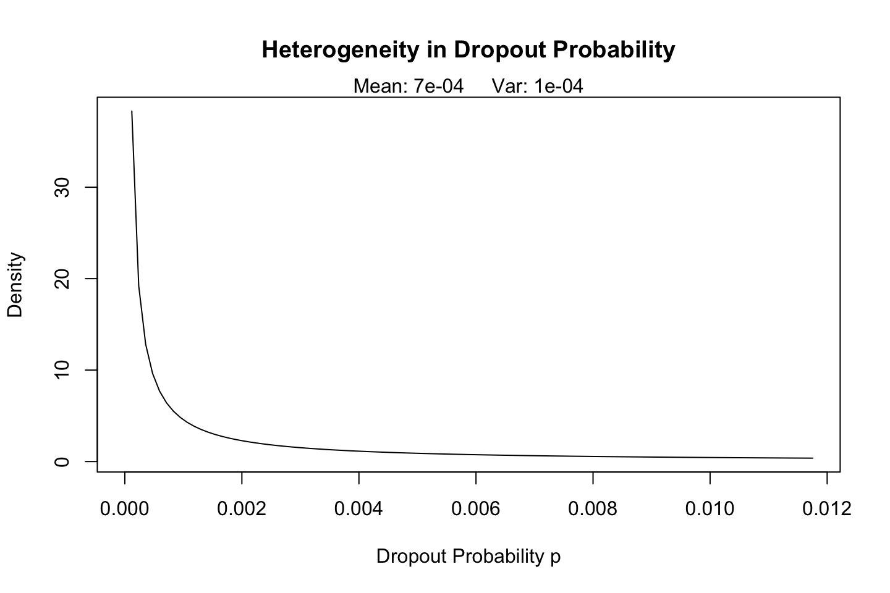
The figure explains where the customers mainly lie of being alive. Hence in the region between 0.3 and 0.4, the most customers lie.
Now we can try to calculate the number of active customers.
# Number of active customers
library(tidyverse)
no_of_active <- sum(p.alives)
no_of_active## [1] 1051.878That is the sum of the probability of p.alives. This is an estimate of how many customers that are actually alive. One could also have made a cutoff saying that we will not accumulate on customer that have less than a certain threshold, e.g., 20%.
This is what he does in the following, where he does:
- Creating a data frame
- Sorting the customers
- Plotting the spread
- Calculating how many active customers there are in the specific scenario.
p.alive1 <- as.data.frame(p.alives)
head(p.alive1)| p.alives |
|---|
| 0.8691602 |
| 0.1679958 |
| 0.2951073 |
| 0.2951073 |
| 0.2951073 |
| 0.7494963 |
p.alive2 <- tibble::rowid_to_column(p.alive1, "ID")
head(p.alive2)| ID | p.alives |
|---|---|
| 1 | 0.8691602 |
| 2 | 0.1679958 |
| 3 | 0.2951073 |
| 4 | 0.2951073 |
| 5 | 0.2951073 |
| 6 | 0.7494963 |
newalive <- arrange(p.alive2,desc(p.alives))
newalive2 <- tibble::rowid_to_column(newalive, "ID1")
head(newalive2,6)| ID1 | ID | p.alives |
|---|---|---|
| 1 | 59 | 1 |
| 2 | 495 | 1 |
| 3 | 519 | 1 |
| 4 | 584 | 1 |
| 5 | 720 | 1 |
| 6 | 761 | 1 |
plot(newalive2$ID1,newalive2$p.alives,xlab="Sorted customers", ylab="P(Alive)")
abline(h =0.5)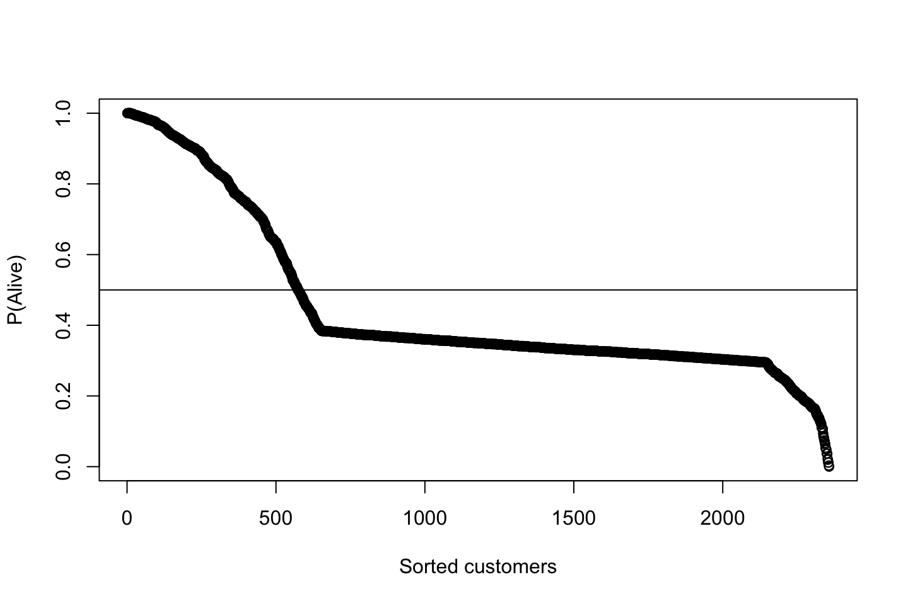
We see that there are approximately 500 active customers.
1.2.4.2 BG/NBG example
Notice, this is showing how this can be applied to any data set.
Remember that that column names should be x, t.x, T.cal
Notice, that this is not a super good files, as it is with customer with a loyalty cards, to they make many repeatitive purchases
library(BTYD)
cal1 <- read.csv("Data/BTYD/cal2010.csv", header=TRUE,sep=';')
cal2010 <- as.matrix(cal1,nrow=3084,ncol=3)
colnames(cal2010) <- c("x","t.x","T.cal")
head(cal2010,10)## x t.x T.cal
## [1,] 77 85 85
## [2,] 83 85 85
## [3,] 56 83 85
## [4,] 65 85 85
## [5,] 77 85 85
## [6,] 78 85 85
## [7,] 78 85 85
## [8,] 57 83 85
## [9,] 83 85 85
## [10,] 79 85 85params <- bgnbd.EstimateParameters(cal2010,par.start = c(1, 1, 1, 1), max.param.value = 10000)
params## p1 p2 p3 p4
## 11.979204509 14.759439087 0.004696903 6.505009679LL <- bgnbd.cbs.LL(params, cal2010)
LL## [1] -251853.9p.matrix <- c(params, LL);
p.matrix## p1 p2 p3 p4
## 1.197920e+01 1.475944e+01 4.696903e-03 6.505010e+00 -2.518539e+05for (i in 1:2){
params <- bgnbd.EstimateParameters(cal2010, params);
LL <- bgnbd.cbs.LL(params, cal2010);
p.matrix.row <- c(params, LL);
p.matrix <- rbind(p.matrix, p.matrix.row);
}
colnames(p.matrix) <- c("r", "alpha", "a", "b", "LL");
rownames(p.matrix) <- 1:3;
p.matrix;## r alpha a b LL
## 1 11.97920 14.75944 0.004696903 6.505010 -251853.9
## 2 11.97929 14.75931 0.004696945 6.505151 -251853.9
## 3 11.97919 14.75943 0.004696956 6.505187 -251853.9bgnbd.PlotTransactionRateHeterogeneity(params)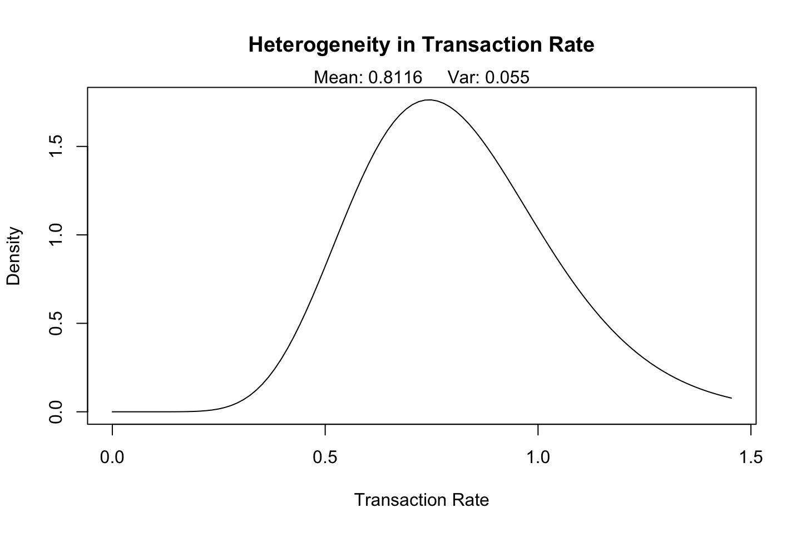
## [,1] [,2] [,3] [,4] [,5]
## x.axis.ticks 0 1.468813e-02 2.937627e-02 4.406440e-02 5.875254e-02
## heterogeneity 0 1.607127e-14 2.611953e-11 1.803659e-09 3.417673e-08
## [,6] [,7] [,8] [,9] [,10]
## x.axis.ticks 7.344067e-02 8.812881e-02 1.028169e-01 1.175051e-01 1.321932e-01
## heterogeneity 3.188407e-07 1.900070e-06 8.310764e-06 2.898648e-05 8.504691e-05
## [,11] [,12] [,13] [,14] [,15]
## x.axis.ticks 0.1468813448 0.1615694793 0.176257614 0.190945748 0.205633883
## heterogeneity 0.0002177151 0.0004991105 0.001044562 0.002025089 0.003678372
## [,16] [,17] [,18] [,19] [,20] [,21]
## x.axis.ticks 0.220322017 0.23501015 0.24969829 0.26438642 0.2790746 0.2937627
## heterogeneity 0.006316514 0.01032904 0.01618007 0.02439906 0.0355653 0.0502867
## [,22] [,23] [,24] [,25] [,26] [,27]
## x.axis.ticks 0.30845082 0.32313896 0.3378271 0.3525152 0.3672034 0.3818915
## heterogeneity 0.06917424 0.09281349 0.1217351 0.1563863 0.1971043 0.2440947
## [,28] [,29] [,30] [,31] [,32] [,33]
## x.axis.ticks 0.3965796 0.4112678 0.4259559 0.4406440 0.4553322 0.4700203
## heterogeneity 0.2974142 0.3569603 0.4224665 0.4935051 0.5694952 0.6497169
## [,34] [,35] [,36] [,37] [,38] [,39]
## x.axis.ticks 0.4847084 0.4993966 0.5140847 0.5287728 0.543461 0.5581491
## heterogeneity 0.7333301 0.8193970 0.9069070 0.9948030 1.082009 1.1674554
## [,40] [,41] [,42] [,43] [,44] [,45]
## x.axis.ticks 0.5728372 0.5875254 0.6022135 0.6169016 0.6315898 0.6462779
## heterogeneity 1.2501053 1.3289753 1.4031568 1.4718315 1.5342855 1.5899181
## [,46] [,47] [,48] [,49] [,50] [,51]
## x.axis.ticks 0.6609661 0.6756542 0.6903423 0.7050305 0.7197186 0.7344067
## heterogeneity 1.6382485 1.6789183 1.7116911 1.7364497 1.7531903 1.7620148
## [,52] [,53] [,54] [,55] [,56] [,57]
## x.axis.ticks 0.7490949 0.763783 0.7784711 0.7931593 0.8078474 0.8225355
## heterogeneity 1.7631221 1.756797 1.7434007 1.7233560 1.6971386 1.6652640
## [,58] [,59] [,60] [,61] [,62] [,63]
## x.axis.ticks 0.8372237 0.8519118 0.8665999 0.8812881 0.8959762 0.9106643
## heterogeneity 1.6282766 1.5867388 1.5412215 1.4922951 1.4405213 1.3864463
## [,64] [,65] [,66] [,67] [,68] [,69]
## x.axis.ticks 0.9253525 0.9400406 0.9547287 0.9694169 0.984105 0.9987931
## heterogeneity 1.3305948 1.2734652 1.2155255 1.1572106 1.098920 1.0410155
## [,70] [,71] [,72] [,73] [,74] [,75]
## x.axis.ticks 1.0134813 1.0281694 1.0428575 1.0575457 1.072234 1.0869220
## heterogeneity 0.9838234 0.9276314 0.8726912 0.8192185 0.767395 0.7173703
## [,76] [,77] [,78] [,79] [,80] [,81]
## x.axis.ticks 1.1016101 1.1162982 1.1309864 1.1456745 1.160363 1.1750508
## heterogeneity 0.6692633 0.6231647 0.5791393 0.5372285 0.497452 0.4598109
## [,82] [,83] [,84] [,85] [,86] [,87]
## x.axis.ticks 1.1897389 1.2044270 1.2191152 1.2338033 1.2484914 1.2631796
## heterogeneity 0.4242895 0.3908575 0.3594724 0.3300808 0.3026212 0.2770246
## [,88] [,89] [,90] [,91] [,92] [,93]
## x.axis.ticks 1.2778677 1.2925558 1.3072440 1.3219321 1.3366202 1.3513084
## heterogeneity 0.2532168 0.2311196 0.2106519 0.1917308 0.1742728 0.1581945
## [,94] [,95] [,96] [,97] [,98] [,99]
## x.axis.ticks 1.3659965 1.3806846 1.3953728 1.4100609 1.42474904 1.43943718
## heterogeneity 0.1434135 0.1298486 0.1174207 0.1060533 0.09567221 0.08620665
## [,100]
## x.axis.ticks 1.45412531
## heterogeneity 0.07758884bgnbd.PlotDropoutRateHeterogeneity(params)
## [,1] [,2] [,3] [,4] [,5]
## x.axis.ticks 0 1.187082e-04 2.374164e-04 3.561247e-04 0.0004748329
## heterogeneity Inf 3.832157e+01 1.921071e+01 1.282317e+01 9.6240849257
## [,6] [,7] [,8] [,9] [,10]
## x.axis.ticks 0.0005935411 0.0007122493 0.0008309575 0.0009496657 0.001068374
## heterogeneity 7.7023038611 6.4198859224 5.5031446971 4.8151220706 4.279676455
## [,11] [,12] [,13] [,14] [,15]
## x.axis.ticks 0.001187082 0.00130579 0.001424499 0.001543207 0.001661915
## heterogeneity 3.851094992 3.50027201 3.207794374 2.960216351 2.747930017
## [,16] [,17] [,18] [,19] [,20]
## x.axis.ticks 0.001780623 0.001899331 0.00201804 0.002136748 0.002255456
## heterogeneity 2.563886969 2.402799107 2.26062130 2.134206411 2.021069151
## [,21] [,22] [,23] [,24] [,25]
## x.axis.ticks 0.002374164 0.002492873 0.002611581 0.002730289 0.002848997
## heterogeneity 1.919220770 1.827050925 1.743241750 1.666704325 1.596531025
## [,26] [,27] [,28] [,29] [,30]
## x.axis.ticks 0.002967705 0.003086414 0.003205122 0.00332383 0.003442538
## heterogeneity 1.531959283 1.472343727 1.417134488 1.36586017 1.318114309
## [,31] [,32] [,33] [,34] [,35]
## x.axis.ticks 0.003561247 0.003679955 0.003798663 0.003917371 0.004036079
## heterogeneity 1.273544600 1.231844131 1.192744316 1.156009089 1.121430124
## [,36] [,37] [,38] [,39] [,40]
## x.axis.ticks 0.004154788 0.004273496 0.004392204 0.004510912 0.00462962
## heterogeneity 1.088822879 1.058023293 1.028885021 1.001277106 0.97508201
## [,41] [,42] [,43] [,44] [,45]
## x.axis.ticks 0.004748329 0.004867037 0.004985745 0.005104453 0.005223162
## heterogeneity 0.950193927 0.926517373 0.903965941 0.882461254 0.861932053
## [,46] [,47] [,48] [,49] [,50]
## x.axis.ticks 0.00534187 0.005460578 0.005579286 0.005697994 0.005816703
## heterogeneity 0.84231340 0.823546016 0.805575636 0.788352526 0.771831007
## [,51] [,52] [,53] [,54] [,55]
## x.axis.ticks 0.005935411 0.006054119 0.006172827 0.006291536 0.006410244
## heterogeneity 0.755969048 0.740727911 0.726071835 0.711967753 0.698385048
## [,56] [,57] [,58] [,59] [,60]
## x.axis.ticks 0.006528952 0.00664766 0.006766368 0.006885077 0.007003785
## heterogeneity 0.685295324 0.67267221 0.660491193 0.648729434 0.637365651
## [,61] [,62] [,63] [,64] [,65]
## x.axis.ticks 0.007122493 0.007241201 0.007359909 0.007478618 0.007597326
## heterogeneity 0.626379975 0.615753839 0.605469875 0.595511813 0.585864400
## [,66] [,67] [,68] [,69] [,70]
## x.axis.ticks 0.007716034 0.007834742 0.007953451 0.008072159 0.008190867
## heterogeneity 0.576513321 0.567445127 0.558647172 0.550107551 0.541815051
## [,71] [,72] [,73] [,74] [,75]
## x.axis.ticks 0.008309575 0.008428283 0.008546992 0.0086657 0.008784408
## heterogeneity 0.533759096 0.525929709 0.518317462 0.5109134 0.503709235
## [,76] [,77] [,78] [,79] [,80]
## x.axis.ticks 0.008903116 0.009021825 0.009140533 0.009259241 0.009377949
## heterogeneity 0.496696845 0.489868719 0.483217689 0.476736952 0.470420054
## [,81] [,82] [,83] [,84] [,85]
## x.axis.ticks 0.009496657 0.009615366 0.009734074 0.009852782 0.00997149
## heterogeneity 0.464260859 0.458253535 0.452392536 0.446672580 0.44108864
## [,86] [,87] [,88] [,89] [,90] [,91]
## x.axis.ticks 0.0100902 0.01020891 0.01032761 0.01044632 0.01056503 0.01068374
## heterogeneity 0.4356359 0.43030985 0.42510607 0.42002042 0.41504892 0.41018778
## [,92] [,93] [,94] [,95] [,96] [,97]
## x.axis.ticks 0.01080245 0.01092116 0.01103986 0.01115857 0.01127728 0.01139599
## heterogeneity 0.40543336 0.40078218 0.39623092 0.39177640 0.38741557 0.38314551
## [,98] [,99] [,100]
## x.axis.ticks 0.0115147 0.01163341 0.01175211
## heterogeneity 0.3789634 0.37486657 0.37085243bgnbd.Expectation(params, t=52)## p3
## 41.92832bgnbd.PlotFrequencyInCalibration(params, cal2010, 85)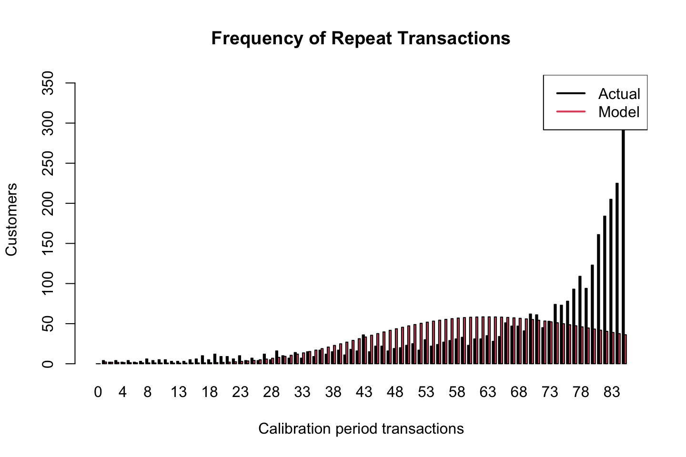
## freq.0 freq.1 freq.2 freq.3 freq.4 freq.5 freq.6
## n.x.actual 0.000000e+00 4.000000 2.000000 4.000000 2.000000 4.000000 2.000000
## n.x.expected 3.529993e-07 2.225145 1.927474 1.699974 1.520557 1.375656 1.256601
## freq.7 freq.8 freq.9 freq.10 freq.11 freq.12 freq.13
## n.x.actual 3.000000 6.000000 4.000000 5.0000000 5.0000000 3.0000000 3.0000000
## n.x.expected 1.157774 1.075629 1.008158 0.9546069 0.9153288 0.8917102 0.8861372
## freq.14 freq.15 freq.16 freq.17 freq.18 freq.19 freq.20
## n.x.actual 3.0000000 5.0000000 6.000000 10.000000 5.000000 12.000000 9.000000
## n.x.expected 0.9019715 0.9435202 1.015989 1.125409 1.278537 1.482724 1.745754
## freq.21 freq.22 freq.23 freq.24 freq.25 freq.26 freq.27
## n.x.actual 9.000000 6.000000 10.000000 4.000000 7.000000 4.00000 12.000000
## n.x.expected 2.075664 2.480535 2.968283 3.546425 4.221866 5.00068 5.887913
## freq.28 freq.29 freq.30 freq.31 freq.32 freq.33 freq.34
## n.x.actual 5.000000 16.000000 10.000000 7.00000 14.00000 7.00000 15.0000
## n.x.expected 6.887405 8.001637 9.231614 10.57678 12.03495 13.60233 15.2735
## freq.35 freq.36 freq.37 freq.38 freq.39 freq.40 freq.41
## n.x.actual 9.0000 17.00000 12.00000 15.00000 17.00000 11.00000 18.00000
## n.x.expected 17.0415 18.89789 20.83288 22.83548 24.89363 26.99441 29.12421
## freq.42 freq.43 freq.44 freq.45 freq.46 freq.47 freq.48
## n.x.actual 16.00000 36.00000 15.00000 22.00000 22.00000 16.00000 19.0000
## n.x.expected 31.26893 33.41418 35.54548 37.64844 39.70895 41.71335 43.6486
## freq.49 freq.50 freq.51 freq.52 freq.53 freq.54 freq.55
## n.x.actual 20.0000 23.00000 25.00000 17.00000 30.00000 22.00000 24.00000
## n.x.expected 45.5024 47.26333 48.92094 50.46586 51.88983 53.18578 54.34785
## freq.56 freq.57 freq.58 freq.59 freq.60 freq.61 freq.62
## n.x.actual 27.00000 29.00000 31.00000 33.00000 23.00000 31.00000 31.00000
## n.x.expected 55.37139 56.25297 56.99036 57.58247 58.02933 58.33204 58.49268
## freq.63 freq.64 freq.65 freq.66 freq.67 freq.68 freq.69
## n.x.actual 35.00000 28.00000 34.0000 51.00000 47.00000 47.00000 41.00000
## n.x.expected 58.51425 58.40059 58.1563 57.78664 57.29747 56.69516 55.98646
## freq.70 freq.71 freq.72 freq.73 freq.74 freq.75 freq.76
## n.x.actual 62.00000 61.00000 45.00000 53.00000 74.00000 73.00000 78.0000
## n.x.expected 55.17848 54.27856 53.29424 52.23314 51.10291 49.91118 48.6655
## freq.77 freq.78 freq.79 freq.80 freq.81 freq.82
## n.x.actual 93.00000 109.00000 94.00000 123.00000 161.00000 184.00000
## n.x.expected 47.37326 46.04169 44.67778 43.28826 41.87956 40.45781
## freq.83 freq.84 freq.85+
## n.x.actual 205.00000 225.000 327.00000
## n.x.expected 39.02881 37.598 36.17045